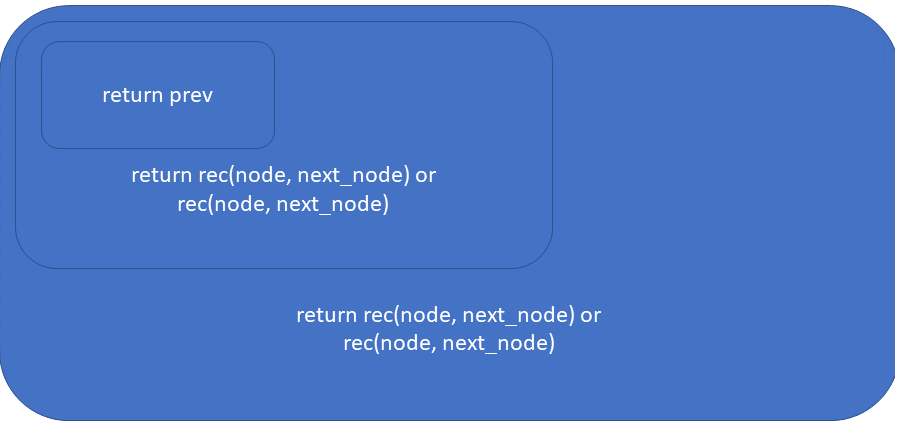

遥泥[Yaoni]
Table of Contents
- 1. Intro
- 2. Emacs
- 3. Vim
- 4. Docker
- 5. (Ma)Git
- 6. MySQL
- 7. Economics
- 8. ReactJS
- 9. NodeJS
- 10. Windows
- 11. Linux/Bash
- 12. Python
- 13. Pandas
- 13.1. Tips
- 13.1.1. Add a new row to dataframe with specific index name
- 13.1.2. Groupby starting/ending at a specific month
- 13.1.3. Concatenate two dataframes
- 13.1.4. Get unique records in a Series/Dataframe
- 13.1.5.
Series.map(func) - 13.1.6. Accessor object for datetimelike properties of the Series values.
- 13.1.7. Shift values by row/column
- 13.1.8. Calculate cumsum for each group
- 13.1.9. Unstack dataframe
- 13.1. Tips
- 14. Matplotlib
- 15. SEO
- 16. Regex
- 17. Interview
- 18. Programming practice
- 19. Setting up X windows with WSL
- 20. Random stuff
- 21. Good blogs
;#+EXPORTFILENAME: ../website/learning.html
1 Intro
Here I record some of the stuff that I learned. Back to index
2 Emacs
2.1 General
2.1.1 Great resources resource
- dealing with symbol's function definition is void, see here When an error message appears in Emacs stating that symbol's function definition is void …, the usual cases are as follows: The library containing the function named in the error message is missing. The library containing the function named in the error message is not in the load-path. The library containing the function named in the error message has not been loaded using something like (require 'name-of-library-without-the-el-at-the-end). The load-path for the location where the library is installed must be adjusted before the require statement. Rather than adjusting the load-path for a new directory, it is also possible to simply save or move the library to an existing directory that is already in the load-path.
- ergoemacs
- Emacswiki
- sachachua
2.1.2 Misc tip
- Disable the beep in Emacs
(setq visible-bell 1) - Emacs file encoding FAQ
Quick references:
How to open a file with specific coding system?
Open it normally, then Alt+x revert-buffer-with-coding-system, then type a coding system. Press Tab to list possible ones.
How to set a encoding system for saving file?
Alt+x set-buffer-file-coding-system, then type the encoding system you want. Press Tab to see a list of possible values. After you set a encoding system, you can save the file and it'll be saved in the new encoding system.
In a buffer, how to find out what encoding system was used to decode current file?
Check the value of the variable buffer-file-coding-system. You do that by Alt+x describe-variable 【Ctrl+h v】.
Is there a way to declare a file with a particular character encoding?
Yes. In the first line of your file, put -- coding: utf-8 --. That way, each time emacs open the file, emacs will presume that the file is encoded in utf-8. The line can start with a comment character(s) of your language, such as “#”, “//”. This magic line is also adopted by Python.
(info "(emacs) File Variables")
- linum-mode slows Emacs
Use
M-x global-display-line-numbers-modeinstead. - Maximize window when start up
emacs -mm
2.2 Org mode
2.2.1 Great resources resource
2.2.3 Agenda
2.2.4 Properties
2.2.5 Add Latex fragments
2.2.6 Add snippets
2.2.7 Latex
\begin{equation} A = \sqrt(D) \end{equation}
2.2.8 Installing org-drill
We need to do the following to properly install org-drill.
- Add org-elpa into the init list using
M-x package-archives. Insert"org", "https://orgmode.org/elpa/". - Run
M-x package-list. - Install
org-plus-contrib. - Run
M-x customize-variables RET org-modulesand tick org-drill. - Restart Emacs.
2.3 Evil
2.3.1 Evil org
2.4 EIN
2.4.1 Issues
- Not able to save some notebooks
When the notebook has the following content, it's not able to save the notebook.
However it's not related to the backslash because the notebook can be saved with backslash. And I can actually save this text in another notebook, just not in the original one…
Related issue but not sure if it's actually the same because in my case the file is not saved.
Out [5]: Loan Number stub 1 stub 2 stub 3 Client Number 1 Client Name 1 \ 0 2140 NaN NaN NaN 195 Name removed 1 2140 NaN NaN NaN 195 Name removed 2 2140 NaN NaN NaN 195 Name removed 3 2140 NaN NaN NaN 195 Name removed 4 2140 NaN NaN NaN 195 Name removed Client Number 2 Client Name 2 Date Transaction Details \ 0 NaN NaN 10/06/2005 Loan Advance 1 NaN NaN 10/06/2005 Credit Fees and Charges 2 NaN NaN 16/06/2005 Direct Debit Payment 3 NaN NaN 30/06/2005 Direct Debit Payment 4 NaN NaN 30/06/2005 Interest Charged ... Unnamed: 13 Unnamed: 14 Unnamed: 15 Unnamed: 16 \ 0 ... NaN NaN NaN NaN 1 ... NaN NaN NaN NaN 2 ... NaN NaN NaN NaN 3 ... NaN NaN NaN NaN 4 ... NaN NaN NaN NaN Unnamed: 17 Unnamed: 18 Unnamed: 19 Unnamed: 20 Unnamed: 21 Unnamed: 22 0 NaN NaN NaN NaN NaN NaN 1 NaN NaN NaN NaN NaN NaN 2 NaN NaN NaN NaN NaN NaN 3 NaN NaN NaN NaN NaN NaN 4 NaN NaN NaN NaN NaN NaN [5 rows x 23 columns]The following also fails to save in the original notebook. And again, when saved in one single file with a
print()function, everything works fine.Loan Number Transaction Details Debit Credit Date 2006-05-08 2188 Direct Debit Reversal 206.70 0.0 2006-05-19 2188 Direct Debit Reversal 206.70 0.0 2006-05-22 2188 Direct Debit Reversal 283.93 0.0 2006-05-29 2188 Direct Debit Reversal 283.93 0.0 2006-06-05 2188 Direct Debit Reversal 283.93 0.0 2006-06-13 2188 Direct Debit Reversal 206.70 0.0 2006-06-26 2188 Direct Debit Reversal 206.70 0.0 2006-07-03 2188 Direct Debit Reversal 206.70 0.0 2006-07-11 2188 Direct Debit Reversal 206.70 0.0 2006-07-14 2188 Payment Reversal 220.00 0.0 2006-07-17 2188 Direct Debit Reversal 206.70 0.0 2006-07-24 2188 Direct Debit Reversal 206.70 0.0 2006-07-31 2188 Direct Debit Reversal 206.70 0.0 2006-08-07 2188 Direct Debit Reversal 206.70 0.0 2007-06-27 2188 Direct Debit Reversal 250.00 0.0 2007-07-11 2188 Direct Debit Reversal 250.00 0.0 2007-07-18 2188 Direct Debit Reversal 250.00 0.0 2007-08-01 2188 Direct Debit Reversal 250.00 0.0 2007-08-08 2188 Direct Debit Reversal 250.00 0.0 2007-08-15 2188 Direct Debit Reversal 250.00 0.0 2007-08-16 2188 Payment Reversal 250.00 0.0 2007-08-22 2188 Direct Debit Reversal 250.00 0.0 2007-08-29 2188 Direct Debit Reversal 250.00 0.0 2007-09-05 2188 Direct Debit Reversal 250.00 0.0 2007-09-12 2188 Direct Debit Reversal 250.00 0.0 2007-09-21 2188 Direct Debit Reversal 250.00 0.0 2007-09-26 2188 Direct Debit Reversal 250.00 0.0 2007-10-03 2188 Direct Debit Reversal 250.00 0.0 2007-10-10 2188 Direct Debit Reversal 250.00 0.0 2007-10-17 2188 Direct Debit Reversal 250.00 0.0 ... ... ... ... ... 2019-07-01 10859 Direct Debit Reversal 157.33 0.0 2019-07-08 10859 Direct Debit Reversal 157.33 0.0 2019-07-15 10859 Direct Debit Reversal 157.33 0.0 2019-07-22 10859 Direct Debit Reversal 157.33 0.0 2019-07-29 10859 Direct Debit Reversal 157.33 0.0 2019-07-01 10870 Direct Debit Reversal 138.03 0.0 2019-07-08 10870 Direct Debit Reversal 138.03 0.0 2019-07-15 10870 Direct Debit Reversal 138.03 0.0 2019-07-22 10870 Direct Debit Reversal 138.03 0.0 2019-07-29 10870 Direct Debit Reversal 138.03 0.0 2019-07-18 10883 Direct Debit Reversal 1200.00 0.0 2019-07-22 10885 Direct Debit Reversal 282.78 0.0 2019-07-05 10892 Direct Debit Reversal 464.18 0.0 2019-07-19 10892 Direct Debit Reversal 464.18 0.0 2019-07-05 10906 Direct Debit Reversal 152.19 0.0 2019-07-18 10931 Direct Debit Reversal 591.95 0.0 2019-07-09 10934 Direct Debit Reversal 265.18 0.0 2019-07-23 10934 Direct Debit Reversal 265.18 0.0 2019-07-01 10943 Direct Debit Reversal 150.00 0.0 2019-07-08 10943 Direct Debit Reversal 150.00 0.0 2019-07-22 10943 Direct Debit Reversal 150.00 0.0 2019-07-16 10955 Direct Debit Reversal 175.00 0.0 2019-07-23 10955 Direct Debit Reversal 175.00 0.0 2019-07-30 10955 Direct Debit Reversal 175.00 0.0 2019-07-01 10965 Direct Debit Reversal 250.00 0.0 2019-07-08 10973 Direct Debit Reversal 172.10 0.0 2019-07-29 10973 Direct Debit Reversal 40.00 0.0 2019-07-22 10982 Direct Debit Reversal 250.00 0.0 2019-07-29 10982 Direct Debit Reversal 250.00 0.0 2019-07-03 10991 Direct Debit Reversal 400.00 0.0 [4593 rows x 4 columns]
2.5 Elisp
2.5.1 Chapter 1
- "p" at the end of a function name
The ‘p’ of ‘number-or-marker-p’ is the embodiment of a practice started in the early days of Lisp programming. The ‘p’ stands for “predicate”. In the jargon used by the early Lisp researchers, a predicate refers to a function to determine whether some property is true or false. So the ‘p’ tells us that ‘number-or-marker-p’ is the name of a function that determines whether it is true or false that the argument supplied is a number or a marker. Other Lisp symbols that end in ‘p’ include ‘zerop’, a function that tests whether its argument has the value of zero, and ‘listp’, a function that tests whether its argument is a list.
setandsetq
As a practical matter, you almost always quote the first argument to ‘set’. The combination of ‘set’ and a quoted first argument is so common that it has its own name: the special form ‘setq’. This special form is just like ‘set’ except that the first argument is quoted automatically, so you don’t need to type the quote mark yourself. Also, as an added convenience, ‘setq’ permits you to set several different variables to different values, all in one expression.
To set the value of the variable ‘carnivores’ to the list ‘'(lion tiger leopard)’ using ‘setq’, the following expression is used:
(setq carnivores '(lion tiger leopard))
This is exactly the same as using ‘set’ except the first argument is automatically quoted by ‘setq’. (The ‘q’ in ‘setq’ means ‘quote’.)
With ‘set’, the expression would look like this:
(set 'carnivores '(lion tiger leopard))
- Summary
• Lisp programs are made up of expressions, which are lists or single atoms.
• Lists are made up of zero or more atoms or inner lists, separated by whitespace and surrounded by parentheses. A list can be empty.
• Atoms are multi-character symbols, like ‘forward-paragraph’, single character symbols like ‘+’, strings of characters between double quotation marks, or numbers.
• A number evaluates to itself.
• A string between double quotes also evaluates to itself.
• When you evaluate a symbol by itself, its value is returned. For example, (setq flowers '(lily rose)) flowers ;; returns (lily rose) in the echo area 'flowers ;; returns flowers in the echo area
• When you evaluate a list, the Lisp interpreter looks at the first symbol in the list and then at the function definition bound to that symbol. Then the instructions in the function definition are carried out.
• A single-quote ‘'’ tells the Lisp interpreter that it should return the following expression as written, and not evaluate it as it would if the quote were not there.
• Arguments are the information passed to a function. The arguments to a function are computed by evaluating the rest of the elements of the list of which the function is the first element.
• A function always returns a value when it is evaluated (unless it gets an error); in addition, it may also carry out some action that is a side effect. In many cases, a function’s primary purpose is to create a side effect.
- Exercise
• Generate an error message by evaluating an appropriate symbol that is not within parentheses. test
• Generate an error message by evaluating an appropriate symbol that is between parentheses. (test) • Create a counter that increments by two rather than one. (setq counter 0) (setq counter (+ counter 2)) • Write an expression that prints a message in the echo area when evaluated. (message "This is in the echo area")
2.5.2 Chapter 2
- Buffer names
(buffer-name) (buffer-file-name)
(buffer-name) ;; if we hit C-u C-x C-e, this will append the returned value after the function
- Buffer object
(current-buffer) ;; gets the current buffer object (other-buffer) ;; gets the other buffer that you just switched back from if it's invisible
Actually, by default, if the buffer from which you just switched is visible to you in another window, ‘other-buffer’ will choose the most recent buffer that you cannot see; this is a subtlety that I often forget.
- Switch buffer
(switch-to-buffer (other-buffer))
The symbol ‘switch-to-buffer’ is the first element of the list, so the Lisp interpreter will treat it as a function and carry out the instructions that are attached to it. But before doing that, the interpreter will note that ‘other-buffer’ is inside parentheses and work on that symbol first. ‘other-buffer’ is the first (and in this case, the only) element of this list, so the Lisp interpreter calls or runs the function. It returns another buffer. Next, the interpreter runs ‘switch-to-buffer’, passing to it, as an argument, the other buffer, which is what Emacs will switch to. If you are reading this in Info, try this now. Evaluate the expression. (To get back, type ‘C-x b <RET>’.)(2)
(switch-to-buffer (other-buffer (current-buffer) t))
In this case, the first argument to ‘other-buffer’ tells it which buffer to skip—the current one—and the second argument tells ‘other-buffer’ it is OK to switch to a visible buffer. In regular use, ‘switch-to-buffer’ takes you to a buffer not visible in windows since you would most likely use ‘C-x o’ (‘other-window’) to go to another visible buffer.
- Buffer size and the location of point
(buffer-size) (point)
2.5.3 Chapter 3 Writing Defuns
- Primitive functions
All functions are defined in terms of other functions, except for a few “primitive” functions that are written in the C programming language. Let me re-emphasize this: when you write code in Emacs Lisp, you do not distinguish between the use of functions written in C and the use of functions written in Emacs Lisp. The difference is irrelevant. I mention the distinction only because it is interesting to know. Indeed, unless you investigate, you won’t know whether an already-written function is written in Emacs Lisp or C.
- The 'defun' macro
The function definition template:
(defun FUNCTION-NAME (ARGUMENTS...) "OPTIONAL-DOCUMENTATION..." (interactive ARGUMENT-PASSING-INFO) ; optional BODY...)(defun multiply-by-seven (number) ;; argument is passed by reference "Multiply NUMBER by seven." (* 7 number)) (multiply-by-seven 3)
21
Because a name in an argument list is private to the function definition, you can change the value of such a symbol inside the body of a function without changing its value outside the function. The effect is similar to that produced by a ‘let’ expression.
- Install a function definition
By evaluating this ‘defun’, you have just installed ‘multiply-by-seven’ in Emacs. The function is now just as much a part of Emacs as ‘forward-word’ or any other editing function you use. (‘multiply-by-seven’ will stay installed until you quit Emacs. To reload code automatically whenever you start Emacs, see *note Installing Code Permanently: Permanent Installation.)
- Make a function interactive
You make a function interactive by placing a list that begins with the special form ‘interactive’ immediately after the documentation.
Interestingly, when you call an interactive function interactively, the value returned is not automatically displayed in the echo area. This is because you often call an interactive function for its side effects, such as moving forward by a word or line, and not for the value returned. If the returned value were displayed in the echo area each time you typed a key, it would be very distracting.
(defun multiply-by-seven (number) "Multiply the number by 7" (interactive "p") (message "The result is %d" (* 7 number)))
After evaluating (
C-x C-e) the function, you invoke a function like this in either of two ways:- By typing a prefix argument that contains the number to be passed, and then typing ‘M-x’ and the name of the function, as with ‘C-u 3 M-x forward-sentence’; or,
By typing whatever key or keychord the function is bound to, as with ‘C-u 3 M-e’.
A “prefix argument” is passed to an interactive function by typing
the <META> key followed by a number, for example, ‘M-3 M-e’, or by typing ‘C-u’ and then a number, for example, ‘C-u 3 M-e’ (if you type ‘C-u’ without a number, it defaults to 4).
The
"p"in the(interactive "p")is to tell Emacs to pass the prefix argument to the function and use its value for the argument of the function. - Interactive options
This part is still a bit confusing. Why can we separate
"p"and"c"with"\n"?"\n"is not in the Code characters for 'interactive'.(interactive "p\ncZap to char: ") The function
zap-to-charfirst takes a prefix ("p"), then prompts for a character("\ncZap to char: "). - Install code permanently
• If you have code that is just for yourself, you can put the code for the function definition in your ‘.emacs’ initialization file. When you start Emacs, your ‘.emacs’ file is automatically evaluated and all the function definitions within it are installed. *Note Your ‘.emacs’ File: Emacs Initialization.
• Alternatively, you can put the function definitions that you want installed in one or more files of their own and use the ‘load’ function to cause Emacs to evaluate and thereby install each of the functions in the files. *Note Loading Files: Loading Files.
• Thirdly, if you have code that your whole site will use, it is usual to put it in a file called ‘site-init.el’ that is loaded when Emacs is built. This makes the code available to everyone who uses your machine. (See the ‘INSTALL’ file that is part of the Emacs distribution.) Finally, if you have code that everyone who uses Emacs may want, you can post it on a computer network or send a copy to the Free Software Foundation.
letspecial form
Prevents confusoin when two variables with the same name are used in two functions and they are not intended to refer to the same value.
‘let’ creates a name for a “local variable” that overshadows any use of the same name outside the ‘let’ expression.
letcan create more than one variable at once and it gives variable an initial value, 'nil', or specified by the programmer.letexpression form
A ‘let’ expression is a list of three parts. The first part is the symbol ‘let’. The second part is a list, called a “varlist”, each element of which is either a symbol by itself or a two-element list, the first element of which is a symbol. The third part of the ‘let’ expression is the body of the ‘let’.
A template for a ‘let’ expression looks like this:
(let VARLIST BODY…) a varlist might look like this: ‘(thread (needles 3))’. In this case, in a ‘let’ expression, Emacs binds the symbol ‘thread’ to an initial value of ‘nil’, and binds the symbol ‘needles’ to an initial value of 3.
Another example here
(let ((zebra "stripes") (tiger "fierce")) (message "One kind of animal has %s and another is %s." zebra tiger))
ifspecial form (conditional)
ifin detail
iftemplate:(if TRUE-OR-FALSE-TEST ACTION-TO-CARRY-OUT-IF-TEST-IS-TRUE)ifexample:(if (> 5 4) (message "5 is greater than 4"))
ifanother example:(defun type-of-animal (characteristic) "Print message in echo area depending on CHARACTERISTIC. If the CHARACTERISTIC is the string \"fierce\", then warn of a tiger." (if (equal characteristic "fierce") (message "It is a tiger!")))
else
Template:
(if TRUE-OR-FALSE-TEST ACTION-TO-CARRY-OUT-IF-THE-TEST-RETURNS-TRUE ACTION-TO-CARRY-OUT-IF-THE-TEST-RETURNS-FALSE)(if (> 5 4) (message "5 is greater than 4") (message "4 is greater than 5"))
- Truth and falsehood
As long as the result of the test is not
nil, it isTrue.In Emacs Lisp, the symbol ‘nil’ has two meanings. First, it means the empty list. Second, it means false and is the value returned when a true-or-false-test tests false. ‘nil’ can be written as an empty list, ‘()’, or as ‘nil’. As far as the Lisp interpreter is concerned, ‘()’ and ‘nil’ are the same. Humans, however, tend to use ‘nil’ for false and ‘()’ for the empty list.
save-excursion
In Emacs Lisp programs used for editing, the ‘save-excursion’ function is very common. It saves the location of point, executes the body of the function, and then restores point to its previous position if its location was changed. Its primary purpose is to keep the user from being surprised and disturbed by unexpected movement of point.
save-excursion == git stash.The template for code using ‘save-excursion’ is simple:
(save-excursion BODY...)If there is more than one expression in the body, the value of the last one will be returned as the value of the ‘save-excursion’ function. The other expressions in the body are evaluated only for their side effects; and ‘save-excursion’ itself is used only for its side effect (which is restoring the position of point).
In more detail, the template for a ‘save-excursion’ expression looks like this:
(save-excursion FIRST-EXPRESSION-IN-BODY SECOND-EXPRESSION-IN-BODY THIRD-EXPRESSION-IN-BODY ... LAST-EXPRESSION-IN-BODY)In Emacs Lisp code, a ‘save-excursion’ expression often occurs within the body of a ‘let’ expression. It looks like this:
(let VARLIST (save-excursion BODY...))- Review
In the last few chapters we have introduced a macro and a fair number of functions and special forms. Here they are described in brief, along with a few similar functions that have not been mentioned yet.
‘eval-last-sexp’ Evaluate the last symbolic expression before the current location of point. The value is printed in the echo area unless the function is invoked with an argument; in that case, the output is printed in the current buffer. This command is normally bound to ‘C-x C-e’.
‘defun’ Define function. This macro has up to five parts: the name, a template for the arguments that will be passed to the function, documentation, an optional interactive declaration, and the body of the definition.
For example, in Emacs the function definition of ‘dired-unmark-all-marks’ is as follows.
(defun dired-unmark-all-marks () "Remove all marks from all files in the Dired buffer." (interactive) (dired-unmark-all-files ?\r))
‘interactive’ Declare to the interpreter that the function can be used interactively. This special form may be followed by a string with one or more parts that pass the information to the arguments of the function, in sequence. These parts may also tell the interpreter to prompt for information. Parts of the string are separated by newlines, ‘\n’.
Common code characters are:
‘b’ The name of an existing buffer.
‘f’ The name of an existing file.
‘p’ The numeric prefix argument. (Note that this ‘p’ is lower case.)
‘r’ Point and the mark, as two numeric arguments, smallest first. This is the only code letter that specifies two successive arguments rather than one.
*Note Code Characters for ‘interactive’: (elisp)Interactive Codes, for a complete list of code characters.
‘let’ Declare that a list of variables is for use within the body of the ‘let’ and give them an initial value, either ‘nil’ or a specified value; then evaluate the rest of the expressions in the body of the ‘let’ and return the value of the last one. Inside the body of the ‘let’, the Lisp interpreter does not see the values of the variables of the same names that are bound outside of the ‘let’.
For example,
(let ((foo (buffer-name)) (bar (buffer-size))) (message "This buffer is %s and has %d characters." foo bar))
‘save-excursion’ Record the values of point and the current buffer before evaluating the body of this special form. Restore the value of point and buffer afterward.
For example,
(message "We are %d characters into this buffer." (- (point) (save-excursion (goto-char (point-min)) (point))))
‘if’ Evaluate the first argument to the function; if it is true, evaluate the second argument; else evaluate the third argument, if there is one.
The ‘if’ special form is called a “conditional”. There are other conditionals in Emacs Lisp, but ‘if’ is perhaps the most commonly used.
For example,
(if (= 22 emacs-major-version) (message "This is version 22 Emacs") (message "This is not version 22 Emacs"))
‘<’ ‘>’ ‘<=’ ‘>=’ The ‘<’ function tests whether its first argument is smaller than its second argument. A corresponding function, ‘>’, tests whether the first argument is greater than the second. Likewise, ‘<=’ tests whether the first argument is less than or equal to the second and ‘>=’ tests whether the first argument is greater than or equal to the second. In all cases, both arguments must be numbers or markers (markers indicate positions in buffers).
‘=’ The ‘=’ function tests whether two arguments, both numbers or markers, are equal.
‘equal’ ‘eq’ Test whether two objects are the same. ‘equal’ uses one meaning of the word “same” and ‘eq’ uses another: ‘equal’ returns true if the two objects have a similar structure and contents, such as two copies of the same book. On the other hand, ‘eq’, returns true if both arguments are actually the same object.
‘string<’ ‘string-lessp’ ‘string=’ ‘string-equal’ The ‘string-lessp’ function tests whether its first argument is smaller than the second argument. A shorter, alternative name for the same function (a ‘defalias’) is ‘string<’.
The arguments to ‘string-lessp’ must be strings or symbols; the ordering is lexicographic, so case is significant. The print names of symbols are used instead of the symbols themselves.
An empty string, ‘""’, a string with no characters in it, is smaller than any string of characters.
‘string-equal’ provides the corresponding test for equality. Its shorter, alternative name is ‘string=’. There are no string test functions that correspond to >, ‘>=’, or ‘<=’.
‘message’ Print a message in the echo area. The first argument is a string that can contain ‘%s’, ‘%d’, or ‘%c’ to print the value of arguments that follow the string. The argument used by ‘%s’ must be a string or a symbol; the argument used by ‘%d’ must be a number. The argument used by ‘%c’ must be an ASCII code number; it will be printed as the character with that ASCII code. (Various other %-sequences have not been mentioned.)
‘setq’ ‘set’ The ‘setq’ function sets the value of its first argument to the value of the second argument. The first argument is automatically quoted by ‘setq’. It does the same for succeeding pairs of arguments. Another function, ‘set’, takes only two arguments and evaluates both of them before setting the value returned by its first argument to the value returned by its second argument.
‘buffer-name’ Without an argument, return the name of the buffer, as a string.
‘buffer-file-name’ Without an argument, return the name of the file the buffer is visiting.
‘current-buffer’ Return the buffer in which Emacs is active; it may not be the buffer that is visible on the screen.
‘other-buffer’ Return the most recently selected buffer (other than the buffer passed to ‘other-buffer’ as an argument and other than the current buffer).
‘switch-to-buffer’ Select a buffer for Emacs to be active in and display it in the current window so users can look at it. Usually bound to ‘C-x b’.
‘set-buffer’ Switch Emacs’s attention to a buffer on which programs will run. Don’t alter what the window is showing.
‘buffer-size’ Return the number of characters in the current buffer.
‘point’ Return the value of the current position of the cursor, as an integer counting the number of characters from the beginning of the buffer.
‘point-min’ Return the minimum permissible value of point in the current buffer. This is 1, unless narrowing is in effect.
‘point-max’ Return the value of the maximum permissible value of point in the current buffer. This is the end of the buffer, unless narrowing is in effect.
2.6 mu4e
2.6.1 mu installation and config for Gmail
Install mu. mu4e is automatically installed with mu.
sudo apt-get install libgmime-3.0-dev libxapian-dev
Put these in your init.el.
;; make sure mu4e is in your load-path (require 'mu4e) ;; use mu4e for e-mail in emacs (setq mail-user-agent 'mu4e-user-agent) ;; default ;; (setq mu4e-maildir "~/Maildir") (setq mu4e-drafts-folder "/[Gmail].Drafts") (setq mu4e-sent-folder "/[Gmail].Sent Mail") (setq mu4e-trash-folder "/[Gmail].Trash") ;; don't save message to Sent Messages, Gmail/IMAP takes care of this (setq mu4e-sent-messages-behavior 'delete) ;; (See the documentation for `mu4e-sent-messages-behavior' if you have ;; additional non-Gmail addresses and want assign them different ;; behavior.) ;; setup some handy shortcuts ;; you can quickly switch to your Inbox -- press ``ji'' ;; then, when you want archive some messages, move them to ;; the 'All Mail' folder by pressing ``ma''. (setq mu4e-maildir-shortcuts '( ("/INBOX" . ?i) ("/[Gmail].Sent Mail" . ?s) ("/[Gmail].Trash" . ?t) ("/[Gmail].All Mail" . ?a))) ;; allow for updating mail using 'U' in the main view: (setq mu4e-get-mail-command "offlineimap") ;; something about ourselves (setq user-mail-address "wyatsky@gmail.com" user-full-name "Thomas Wang" mu4e-compose-signature (concat "Thomas\n" "http://www.yaoni.xyz\n")) ;; sending mail -- replace USERNAME with your gmail username ;; also, make sure the gnutls command line utils are installed ;; package 'gnutls-bin' in Debian/Ubuntu (require 'smtpmail) (setq message-send-mail-function 'smtpmail-send-it starttls-use-gnutls t smtpmail-starttls-credentials '(("smtp.gmail.com" 587 nil nil)) smtpmail-auth-credentials '(("smtp.gmail.com" 587 "wyatsky@gmail.com" nil)) smtpmail-default-smtp-server "smtp.gmail.com" smtpmail-smtp-server "smtp.gmail.com" smtpmail-smtp-service 587) ;; alternatively, for emacs-24 you can use: ;;(setq message-send-mail-function 'smtpmail-send-it ;; smtpmail-stream-type 'starttls ;; smtpmail-default-smtp-server "smtp.gmail.com" ;; smtpmail-smtp-server "smtp.gmail.com" ;; smtpmail-smtp-service 587) ;; don't keep message buffers around (setq message-kill-buffer-on-exit t)
Install gnutls-bin if not already installed in your system.
sudo apt-get install gnutls-bin
Install offlinemap to get the email from Gmail to our local machine.
sudo apt-get install offlineimap
Then we config offlinemap.
[general] accounts = Gmail maxsyncaccounts = 3 [Account Gmail] localrepository = Local remoterepository = Remote [Repository Local] type = Maildir localfolders = ~/Maildir [Repository Remote] type = IMAP remotehost = imap.gmail.com remoteuser = USERNAME@gmail.com remotepass = PASSWORD ssl = yes maxconnections = 1
Get the emails.
offlineimap
Use mu to index the emails.
mu index
Alternatively, we can use mu4e in Emacs.
We do not want mu4e to show duplicate emails (as a result of combination of Gmail and offlinemap),
set mu4e-headers-skip-duplicates to t. See doc.
We want to include related messages in the result of a search query.
Set mu4e-headers-include-related to t.
2.6.2 mu4e with mbsync
mbsync downloads emails from an email server into a local maildir, and keeps the maildir in sync with the email server.
mu indexes the local maildir and makes it searchable. mu provides a CLI for this purpose, and mu4e interfaces Emacs with mu.
2.6.3 mu4e with gpg
Restart gpg-agent.
gpgconf --kill gpg-agent
Gmail seems to be throttling mbsync.
3 Vim
3.1 Enter ex-command history
q:
We can use this to access and copy command history.
3.2 Enter search/replace history (last pattern register)
<C-r>/
Enter the / last pattern register for search/replace history while runing search(/) or ex-command(:).
4 Docker
4.2 Tips
- "Release is not valied yet" just restart docker should fix it. otherwise check system time and timezone.
5 (Ma)Git
5.1 Git
5.1.1 Rewind/revert HEAD to a previous commit
An excellent way to pick the previous state, instead of using git-reflog and copying hashes, is to use a shortcut like master@{1}, which is the previous position of master, master@{"5 minutes ago"}, or master@{14:30}. Full details on specifying revisions in this way can be found in man git-rev-parse, in the section called "specifying revisions"
We can use git reflog to show a history of HEAD movements to find the previous commits we want to go to.
5.2 Magit
6 MySQL
6.1 Great resources resource
6.1.1 Tutorials tutorial
7 Economics
7.1 Terms
- cross-sectional data a type of data collected by observing many subjects at one point or period of time
- time series a sequence taken at successive equally spaced points in time
- panel data aka logitudinal data, multi-dimensional data involving measurements over time. Panel data contain observations of multiple phenomena obtained over multiple time periods for the same firms or individuals. Time series and cross secitional data can be thought of as special cases of panel data that are in one dimension only
| x | cross-sectional |
| time series | panel data |
8 ReactJS
9 NodeJS
9.1 Linkedin learning
10 Windows
10.1 Problems and solutions tip
- Bluetooth keeps connecting and disconnecting
Change the registry (HKEYLOCALMACHINE\SYSTEM\CurrentControlSet\Control\Power to 0) and then uncheck the Allow the computer to turn off this device to save power for Marvell AVASTAR Bluetooth Radio Adapter. This should fix the problem with AirPods.
10.2 WSL
10.2.1 "Reboot" WSL
Win+R and enter services.msc.
Find LxssManager, restart it.
11 Linux/Bash
11.1 Tips
11.1.1 Replace text in files of a directory
egrep -lr -e "pattern" . | xargs sed -r -ie "s/pattern/new_word/g".
egrep runs grep in extended regular expression mode.
-l only outputs file names when it finds a word match.
-r search recursively in the directory.
-e "pattern" set the regular expression.
. current directory.
| The pipi (|) tells xargs to operate on the output of the egrep command.
xargs tells sed to use the output of the egrep.
-r makes sure sed is in extended regular expression mode (this won't work in Mac).
-i modifies text files in-place. It takes an argument that is the suffix for the output file; if the empty string is passed, it will replace the input file.
e "s/pattern/new_word/g", the regular expression.
11.1.2 Replace text in a single file
sed -r "s/old_word/new_word/g" old_filename > new_filename
11.1.3 gpg2 sometimes will not ask for passphrase
Put the following in .bashrc and source .bashrc.
GPG_TTY=$(tty) export GPG_TTY
Kill gpg-agent.
Need to install pinentry in WSL with X.
11.1.4 Devices
du
Usually,
du -hs --exclude="PATTERN".Summarize disk usage of the set of FILEs, recursively for directo‐ ries.
Mandatory arguments to long options are mandatory for short options too.
NAME du - estimate file space usage SYNOPSIS du [OPTION]... [FILE]... du [OPTION]... --files0-from=Fdf
Usually,
df -h.DESCRIPTION This manual page documents the GNU version of df. df displays the amount of disk space available on the file system containing each file name argument. If no file name is given, the space available on all currently mounted file systems is shown. Disk space is shown in 1K blocks by default, unless the environment variable POSIXLYCORRECT is set, in which case 512-byte blocks are used.
If an argument is the absolute file name of a disk device node con‐ taining a mounted file system, df shows the space available on that file system rather than on the file system containing the device node. This version of df cannot show the space available on unmounted file systems, because on most kinds of systems doing so requires very nonportable intimate knowledge of file system struc‐ tures.
NAME df - report file system disk space usage SYNOPSIS df [OPTION]... [FILE]...ncdu
Usually,
ncdu --exclude PATTERN. ncdu (NCurses Disk Usage) is a curses-based version of the well-known 'du', and provides a fast way to see what directories are using your disk space.lsblk
list block devices
DESCRIPTION lsblk lists information about all available or the specified block devices. The lsblk command reads the sysfs filesystem and udev db to gather information. If the udev db is not available or lsblk is com‐ piled without udev support than it tries to read LABELs, UUIDs and filesystem types from the block device. In this case root permissions are necessary.
The command prints all block devices (except RAM disks) in a tree- like format by default. Use lsblk –help to get a list of all avail‐ able columns.
The default output, as well as the default output from options like –fs and –topology, is subject to change. So whenever possible, you should avoid using default outputs in your scripts. Always explic‐ itly define expected columns by using –output columns-list in envi‐ ronments where a stable output is required.
Note that lsblk might be executed in time when udev does not have all information about recently added or modified devices yet. In this case it is recommended to use udevadm settle before lsblk to synchro‐ nize with udev.
blkid
blkid - locate/print block device attributes
DESCRIPTION The blkid program is the command-line interface to working with the libblkid(3) library. It can determine the type of content (e.g. filesystem or swap) that a block device holds, and also the attributes (tokens, NAME=value pairs) from the content metadata (e.g. LABEL or UUID fields).
It is recommended to use lsblk(8) command to get information about block devices, or lsblk –fs to get an overview of filesystems, or findmnt(8) to search in already mounted filesystems.
lsblk(8) provides more information, better control on output formatting, easy to use in scripts and it does not require root permissions to get actual information. blkid reads information directly from devices and for non-root users it returns cached unverified information. blkid is mostly designed for system services and to test libblkid functional‐ ity.
When device is specified, tokens from only this device are displayed. It is possible to specify multiple device arguments on the command line. If none is given, all devices which appear in /proc/partitions are shown, if they are recognized.
blkid has two main forms of operation: either searching for a device with a specific NAME=value pair, or displaying NAME=value pairs for one or more specified devices.
For security reasons blkid silently ignores all devices where the probing result is ambivalent (multiple colliding filesystems are detected). The low-level probing mode (-p) provides more information and extra return code in this case. It's recommended to use wipefs(8) to get a detailed overview and to erase obsolete stuff (magic strings) from the device.
11.2 Mounting file systems
12 Python
12.1 Tips
12.1.1 Unexpected UnboundLocalError when the variable has a value
See official doc. Basically, the following two code snippets are different.
x = [2, -1, 4] def increase_x_elements(): for k in range(len(x)): x[k] += 1 increase_x_elements() print(x)
[3, 0, 5]
x = 1 def increase_x(): x += 1 increase_x()
---------------------------------------------------------------------------
UnboundLocalError Traceback (most recent call last)
<ipython-input-7-bfeecd9471e4> in <module>()
4 x += 1
5
----> 6 increase_x()
<ipython-input-7-bfeecd9471e4> in increase_x()
2
3 def increase_x():
----> 4 x += 1
5
6 increase_x()
UnboundLocalError: local variable 'x' referenced before assignment
When we do x += 1 in 3, we are rebinding the variable x to the value of x+1, which causes x to be locally scoped and shadows any similarly named variable in the outer scope.
In the 3 case, variable x is defined at the global level, so we can use the global keyword in the increase_x() function to make it global.
If like in the 20 case, the running_total is in a nested function, then we can use the nonlocal keyword.
The difference is that The nonlocal statement causes the listed identifiers to refer to previously bound variables in the nearest enclosing scope excluding globals.""
12.1.2 Rules for local and global variables in Python
In Python, variables that are only referenced inside a function are implicitly global. If a variable is assigned a value anywhere within the function's body, it's assumed to be a local unless explicitly declared as global.
Though a bit surprising at first, a moment’s consideration explains this. On one hand, requiring global for assigned variables provides a bar against unintended side-effects. On the other hand, if global was required for all global references, you’d be using global all the time. You’d have to declare as global every reference to a built-in function or to a component of an imported module. This clutter would defeat the usefulness of the global declaration for identifying side-effects.
12.2 configparser
https://docs.python.org/3/library/configparser.html
[DEFAULT] ServerAliveInterval = 45 Compression = yes CompressionLevel = 9 ForwardX11 = yes [bitbucket.org] User = hg [topsecret.server.com] Port = 50022 ForwardX11 = no
configparser always stores data as string, so we need to convert integers/floats.
Since this task is so common, config parsers provide a range of handy getter methods to handle integers, floats and booleans. The last one is the most interesting because simply passing the value to bool() would do no good since bool('False') is still True. This is why config parsers also provide getboolean(). This method is case-insensitive and recognizes Boolean values from 'yes''no', 'on''off', 'true''false' and '1''0'
Apart from getboolean(), config parsers also provide equivalent getint() and getfloat() methods. You can register your own converters and customize the provided ones.
[Simple Values] key=value spaces in keys=allowed spaces in values=allowed as well spaces around the delimiter = obviously you can also use : to delimit keys from values [All Values Are Strings] values like this: 1000000 or this: 3.14159265359 are they treated as numbers? : no integers, floats and booleans are held as: strings can use the API to get converted values directly: true [Multiline Values] chorus: I'm a lumberjack, and I'm okay I sleep all night and I work all day [No Values] key_without_value empty string value here = [You can use comments] # like this ; or this # By default only in an empty line. # Inline comments can be harmful because they prevent users # from using the delimiting characters as parts of values. # That being said, this can be customized. [Sections Can Be Indented] can_values_be_as_well = True does_that_mean_anything_special = False purpose = formatting for readability multiline_values = are handled just fine as long as they are indented deeper than the first line of a value # Did I mention we can indent comments, too?
13 Pandas
13.1 Tips
13.1.1 Add a new row to dataframe with specific index name
df.loc[_not_yet_existing_index_label_] = [data, data, data]
After this, can do df.sortvalues() to sort rows by index
13.1.2 Groupby starting/ending at a specific month
Say I want the following df to be grouped by 6M, ending at June and December.
| Date | value |
| 2011-01-01 | 1 |
| 2011-01-31 | 2 |
| 2011-07-01 | 3 |
I can run ~df.loc[pd.todatetime('2010-06-30', format='%Y%m%d')] = [0]. Then I can use ~df.groupby(pd.TimeGrouper('6M')).sum(), which gives what I want.
13.1.3 Concatenate two dataframes
pandas.concat(objs, axis=0, join='outer', join_axes=None, ignore_index=False, keys=None,
levels=None, names=None, verify_integrity=False, sort=None, copy=True)
axis:{0/'index', 1/'columns'}, default 0.
Example here:
payments = pd.concat([i for i in LAST_4_PAYMENT_AMOUNTS], axis=0).
13.1.4 Get unique records in a Series/Dataframe
13.1.5 Series.map(func)
Maps a series to another series by func.
def age_map(age): if age > pd.Timedelta(180, "D"): return "over180" elif age > pd.Timedelta(90, "D"): return "over90under180" else: return "under90" loan_ori_data["age_bucket"] = (loan_ori_data["Age"].map(age_map))
13.1.6 Accessor object for datetimelike properties of the Series values.
Returns a Series indexed like the original Series. Raises TypeError if the Series does not contain datetimelike values.
s.dt.hour s.dt.second s.dt.quarter
13.1.7 Shift values by row/column
df.shift(self, periods=1, freq=None, axis=0, fillvalue=None)
df = pd.DataFrame({'Col1': [10, 20, 15, 30, 45], 'Col2': [13, 23, 18, 33, 48], 'Col3': [17, 27, 22, 37, 52]})
>>> df.shift(periods=3) Col1 Col2 Col3 0 NaN NaN NaN 1 NaN NaN NaN 2 NaN NaN NaN 3 10.0 13.0 17.0 4 20.0 23.0 27.0 >>> df.shift(periods=1, axis='columns') Col1 Col2 Col3 0 NaN 10.0 13.0 1 NaN 20.0 23.0 2 NaN 15.0 18.0 3 NaN 30.0 33.0 4 NaN 45.0 48.0 >>> df.shift(periods=3, fill_value=0) Col1 Col2 Col3 0 0 0 0 1 0 0 0 2 0 0 0 3 10 13 17 4 20 23 27
13.1.8 Calculate cumsum for each group
import pandas as pd df = pd.DataFrame({"name":["Jack", "Jack", "Jack", "Jack", "Jill", "Jill"], "day":["M", "T", "T", "W", "M", "W"], "no": [10, 20, 10, 40, 40, 110] }) # intermediary first_gb = df.groupby(["name", 'day']).sum() # the following statements have the same effect # 0 means first index second_gb = first_gb.groupby(level=['name']).cumsum() second_gb_2 = first_gb.groupby(level=[0]).cumsum()
The following statements have the same effect, 0 means first index
print(second_gb.shape == second_gb_2.shape) print(second_gb == second_gb_2)
True
no
name day
Jack M True
T True
W True
Jill M True
W True
13.1.9 Unstack dataframe
Shows how to unstack a dataframe. Also check here.
import pandas as pd def unstack_df(ori_df, by): test = ori_df.copy() g = test.groupby(by=by).cumcount() df = test.set_index(by + [g]).unstack().sort_index(level=1, axis=1) df.columns = [f'{a}_{b+1}' for a, b in df.columns] df = df.reset_index() return df df = pd.DataFrame({"Loan Number":[1,2,3,4,5,1,2,3,4,5], "pmt":[1,2,3,4,5,5,4,3,2,1] }) df_unstacked = unstack_df(df, ["Loan Number"]) print(df_unstacked)
Loan Number pmt_1 pmt_2 0 1 1 5 1 2 2 4 2 3 3 3 3 4 4 2 4 5 5 1
14 Matplotlib
14.1 Tips
fig.patch.fc = "color"cannot be used, we must usefig.patch.set_fc("color").
14.1.1 Babel code blocks
import sys
sys.executable
[….]
import sys
sys.executable
[….]
import sys return sys.executable
[….]
15 SEO
15.1 The Mozlow's hierarchy of SEO needs
15.2 7 Steps to successful SEO
- Crawl accessibility so engines can read your website
- Compelling content that answers the searcher's query
- Keyword optimized to attract searchers & engines
- Great user experience inc. a fast load speed and compelling UX
- Share-worthy content that earns linkes, citations, and amplification
- Title, URL, & description to draw high CTR (click through rate) in the rankings
- Snippets/schema markup to stand out in SERPs (search engine results pages)
16 Regex
16.1 Resource resource
16.2 Tips
16.2.1 Positive/Negative Lookahead/Lookback
Not sure how all of this works but to record what I did using these techniques. Also 2.3.2.1.
- Vim
Reference Vim handles lookarounds differently than PCRE.
text = "this is a foo, and a foobar, foosome, foobar"
we want to match the first foo followed by bar: Use positive lookahead:
/foo\(bar\)\@=/.We want to match the foo that is not followed by bar: Use negative lookahead:
/foo\(bar\)\@!/.We want to match the last foo that is followed by bar: Use positive lookahead:
/foo\(bar\)\@<=/.We want to match the last foo that is not followed by bar: Use negative lookahead:
/foo\(bar\)\@<!/. - Python
Official doc is a spring of knowledge. https://docs.python.org/3/library/re.html
18 Programming practice
18.1 LeetCode leetcode
DEADLINE: My progress
18.1.2 TODO Execution
- State "DONE" from "TODO"
- State "DONE" from "TODO"
- State "DONE" from "TODO"
- State "DONE" from "TODO"
- State "DONE" from "TODO"
- State "DONE" from "TODO"
- State "DONE" from "TODO"
- State "DONE" from "TODO"
- State "DONE" from "TODO"
- State "DONE" from "TODO"
- State "DONE" from "TODO"
- State "DONE" from "TODO"
- State "DONE" from "TODO"
- State "DONE" from "TODO"
- State "DONE" from "TODO"
- State "DONE" from "TODO"
- State "DONE" from "TODO"
- State "DONE" from "TODO"
- State "DONE" from "TODO"
- State "DONE" from "TODO"
- State "DONE" from "TODO"
- State "DONE" from "TODO"
- State "DONE" from "TODO"
- State "DONE" from "TODO"
- State "DONE" from "TODO"
- State "DONE" from "TODO"
- State "DONE" from "TODO"
- State "DONE" from "TODO"
- State "DONE" from "TODO"
- State "DONE" from "TODO"
- State "DONE" from "TODO"
- State "DONE" from "TODO"
- State "DONE" from "TODO"
- State "DONE" from "TODO"
- State "DONE" from "TODO"
- State "DONE" from "TODO"
- State "DONE" from "TODO"
- State "DONE" from "TODO"
- State "DONE" from "TODO"
Two questions a day should be enough. Don't spend over 30 minutes on one question. Should be ordered by Difficulty, Acceptance rate(high to low), with Solution.
| question type | easy | medium | hard |
|---|---|---|---|
| total number of questions | ~ 200 | ~ 350 | ~ 150 |
| 2 | 0 | 0 | |
| 2 | 0 | 0 | |
| 2 | 0 | 0 | |
| 2 | 0 | 0 | |
| 2 | 0 | 0 | |
| 6 | 0 | 0 | |
| 2 | 0 | 0 | |
| 2 | 0 | 0 | |
| 2 | 0 | 0 | |
18.1.3 Review
- State "DONE" from "TODO"
- State "DONE" from "TODO"
- State "DONE" from "TODO"
- State "DONE" from "TODO"
- State "DONE" from "TODO"
- State "DONE" from "TODO"
- State "DONE" from "TODO"
- State "DONE" from "TODO"
- State "DONE" from "TODO"
- State "DONE" from "TODO"
Review individual questions.
| date | question number | review |
| <2019-09-09 Mon 19:43> | 771. Jewels and stones | Use brute force - python3 or use ~sum([S.count(j) for j in J])~ |
|
<2019-09-09 Mon 20:02> |
938. Range sum of BST |
|
|
<2019-09-10 Tue 16:00> |
804. Unique Morse Code Word |
Hash code of two lists containing same elements can be different, hence the ~''.join~ |
| <2019-09-10 Tue 16:38> | 832. Flipping an Image | Use ~map(func, iterable)~ function would be a great idea |
|
<2019-09-11 Wed 20:31> |
905. Sort array by parity |
list.insert() always moves current element at the position to the right, even when the index is -1 |
| <2019-09-11 Wed 20:33> | 961. N-repeated elemnts in size 2N array | The target element is the one that appears twice |
| <2019-09-11 Wed 21:39> | 977. squares of a sorted array | Can use binary insertion or two pointer algorithm |
| date | quesiton number | review |
| 509 | There are 6 ways to do this! | |
18.1.4 Solutions [85/85]
Daily report:
| Headline | Time |
|---|---|
| Total time | 0:00 |
Daily report:
| Headline | Time | |||
|---|---|---|---|---|
| Total time | 1:33 | |||
| Solutions [84/84] | 1:33 | |||
| 538 Convert BST to Greater Tree | 1:33 |
Daily report:
| Headline | Time | |||
|---|---|---|---|---|
| Total time | 0:35 | |||
| Solutions [84/84] | 0:35 | |||
| 606 Construct String from Binary Tree | 0:35 |
Daily report:
| Headline | Time |
|---|---|
| Total time | 0:00 |
Daily report:
| Headline | Time |
|---|---|
| Total time | 0:00 |
Daily report:
| Headline | Time |
|---|---|
| Total time | 0:00 |
Daily report:
| Headline | Time |
|---|---|
| Total time | 0:00 |
- DONE 771 Jewels and stones
Jrepresents jewels- characters in
Jare distinctive Srepresents stones- letters are case-sensitive
- calculate the number of stones that are jewels
- DONE 938 Range Sum of BST
- given the root node of a binary search tree
- return the sum of values of all nodes with value between
LandR(inclusive) - the BST is guaranteed to have unique values
- The number of nodes in the tree is at most 10000
- the final answer is guaranteed to be less than 231
- DONE 804 Unique Morse Code words
- letter is mapped to a series of dots and dashes
def uniqueMorseRepresentations(words): map_list=[".-","-...","-.-.","-..",".","..-.","--.","....","..",".---","-.-",".-..","--","-.","---",".--.","--.-",".-.","...","-","..-","...-",".--","-..-","-.--","--.."] store = [] for w in words: # 0-based index new_morse = "".join([map_list[ord(c) - 97] for c in w]) if new_morse not in store: store.append(new_morse) return len(store) return uniqueMorseRepresentations(['gin', 'zen', 'gig', 'msg'])
2
- DONE 832 Flipping an Image
- given a matrix
A - flip it horizontally, i.e. [1, 1, 0] to [0, 1, 1]
- invert it, i.e. change 1 to 0 and 0 to 1
def flip_and_invert_image(A): new_image = [] for i in A: rev_i = i[::-1] inv_i = [1-p for p in rev_i] new_image.append(inv_i) return new_image return flip_and_invert_image([[1,1,0],[1,0,1],[0,0,0]])
def flip_and_invert_image(A): result = [] for row in A: result.append(list(map(lambda x: 0 if x==1 else 1, row[::-1]))) return result return flip_and_invert_image([[1,1,0],[1,0,1],[0,0,0]])
1 0 0 0 1 0 1 1 1 1 0 0 0 1 0 1 1 1 - given a matrix
- DONE 905 Sort array by parity
- given an array
Aof non-negative integers - return an array consisting of all the even elements of
A, followed by all the odd elements of A
def sort_array_by_parity(A): sorted_list = [] for e in A: if e % 2 == 0: sorted_list.insert(0, e) else: # insert() wouldn't work because it shifts 0 at index -1 to the right. # sorted_list.insert(-1, e) sorted_list.append(e) return sorted_list return sort_array_by_parity([0,1])
0 1 - given an array
- DONE 961 N-Repeated elements in size 2N array
N+1unique elements in an arrayAof size2N- exactly one of these elements is repeated
Ntimes - return the element that repeated
Ntimes
def repeated_n_times(A): store = [] for e in A: if e in store: return e else: store.append(e)
- DONE 657 Robot return to origin
- robot starts at position (0, 0), the origin
- given the sequence of its moves, judge if this robot ends up at (0, 0) after it completes its moves
- the move sequence is represented by a string
- valid moves are R(ight), L(eft), U(p), D(own)
- if the robot returns to origin after the moves, return true, else, return false
- where the robot faces is irrelevant
def robot_returned(moves): MOVE_MAP = {'U':1, 'D': -1, 'R':1, 'L':-1} x_coord = 0 y_coord = 0 for m in moves: if m in 'UD': y_coord += MOVE_MAP[m] else: x_coord += MOVE_MAP[m] if x_coord == 0 and y_coord == 0: return True return False
- DONE 977 Squares of a sorted array
- given an array of integers
Ain non-decreasing order - return an array of the squares of each number, also in sorted non-decreasing order
My instinct tells me to use a type of Insertion Sort. But it actually can use Binary Search???
def sorted_squares(A): return sorted(x*x for x in A)
def sorted_squares(A): sorted_tobe_inserted = [] # sanity check if A[0] >= 0: return [x**2 for x in A] if A[-1] <= 0: return [x**2 for x in A[::-1]] # mixed negatives and positives result_list = A.copy() def find_positive_and_insert(A, sorted_tobe_inserted): for idx, x in enumerate(A): if x < 0: sorted_tobe_inserted.insert(0, -1 * x) else: return idx def binary_insert(elem, target, left, right): # base case, if L == R # right == left + 1 is also an edge case if left == right or (right == left + 1): if elem <= target[left]: target.insert(left, elem) else: target.insert(left+1, elem) return else: m = (left+right)//2 if elem <= target[m]: binary_insert(elem, target, left, m) else: binary_insert(elem, target, m, right) idx = find_positive_and_insert(A, sorted_tobe_inserted) target = A[idx::] for elem in sorted_tobe_inserted: binary_insert(elem, target, 0, len(target)) return [x**2 for x in target] return sorted_squares([-4, -1, 3, 10])
def sorted_squares(A): sorted_tobe_inserted = [] # sanity check if A[0] >= 0: return [x**2 for x in A] if A[-1] <= 0: return [x**2 for x in A[::-1]] # mixed negatives and positives result_list = A.copy() def find_positive_and_insert(A, sorted_tobe_inserted): for idx, x in enumerate(A): if x < 0: sorted_tobe_inserted.insert(0, -1 * x) else: return idx def binary_insert(elem, target, left, right): # base case, if L == R if left == right or (right == left + 1): if elem <= target[left]: target.insert(left, elem) else: target.insert(left+1, elem) return else: m = (left+right)//2 if elem <= target[m]: binary_insert(elem, target, left, m) else: binary_insert(elem, target, m + 1, right) idx = find_positive_and_insert(A, sorted_tobe_inserted) target = A[idx::] for elem in sorted_tobe_inserted: binary_insert(elem, target, 0, len(target)) return [x**2 for x in target] return sorted_squares([-4, -1, 3, 10])
def sorted_squares(A): N = len(A) # i, j: negative, positive parts j = 0 # find all negatives while j < N and A[j] < 0: j += 1 i = j - 1 ans = [] # loop until negatives or positives run out while 0 <= i and j < N: if A[i]**2 < A[j]**2: ans.append(A[i]**2) i -= 1 else: ans.append(A[j]**2) j += 1 # deal with anything that's still out there while i >= 0: ans.append(A[i]**2) i -= 1 while j < N: ans.append(A[j]**2) j += 1 return ans return sorted_squares([-3, -2, 2, 3, 4])
4 4 9 9 16 1 9 16 100 1 9 16 100 - given an array of integers
- DONE 728 Self dividing numbers
- a self-dividing number(sdn) is a number that is divisible by every digit it contains
- 128 % 1
= 0, 128 % 2 =0, 128 % 8 == 0 - sdn does not have the digit zero
- given a lower and upper number bound, output a list of every possible self dividing number, including the bounds if possible
def self_dividing_number(left, right): def is_dividing_number(num): # converting the num to str so we can check if it contains zero test = str(num) if '0' in test: return False else: for digit in test: if num % int(digit) != 0: return False return True ans = [] # the solution must have a loop through the list [left, right + 1] for num in range(left, right + 1): if is_dividing_number(num): ans.append(num) return ans
- DONE 617 Merging two binary trees
- given two binary trees and put one of them to cover the other
- some nodes of the two trees are overlapped while the others are not
- merge them into a new binary tree
- if two nodes overlap, then sum node values up as the new value of the merged node
- otherwise, the NOT null node will be used as the node of the new tree
# Definition for a binary tree node. class TreeNode: def __init__(self, x): self.val = x self.left = None self.right = None def merge_binary_trees(t1, t2): def reaches_leaf(node: TreeNode): return node.left == None and node.right == None # dfs merge def merge_binary_trees_recursive(ans_node, node1, node2): # base case ans_node.val = node1.val + node2.val ans_node.left = TreeNode(0) ans_node.right = TreeNode(0) if reaches_leaf(node1) and reaches_leaf(node2): ans_node.left = None ans_node.right = None return elif node1.left == None and node2.left == None: ans_node.left = None elif node1.right == None and node2.right == None: ans_node.right = None if ans_node.left != None: node1.left = TreeNode(0) if node1.left == None else node1.left node2.left = TreeNode(0) if node2.left == None else node2.left merge_binary_trees_recursive(ans_node.left, node1.left, node2.left) if ans_node.right != None: node1.right = TreeNode(0) if node1.right == None else node1.right node2.right = TreeNode(0) if node2.right == None else node2.right merge_binary_trees_recursive(ans_node.right, node1.right, node2.right) else: return # this defensive programming is not beautiful but required to pass the test if t1 == None: return t2 if t2 == None: return t1 ans_node = TreeNode(0) merge_binary_trees_recursive(ans_node, t1, t2) return ans_node t1 = TreeNode(1) t1.left = TreeNode(3) t1.right = TreeNode(2) t1.left.left = TreeNode(5) t2 = TreeNode(2) t2.left = TreeNode(1) t2.left.right = TreeNode(4) t2.right = TreeNode(3) t2.right.right = TreeNode(7) return merge_binary_trees(t1, t2)
# this method does not care if t1 or t2 is None def merge_trees(t1, t2): if t1 is None: return t2 if t2 is None: return t1 t1.val += t2.val t1.left = merge_trees(t1.left, t2.left) t1.right = merge_trees(t1.right, t2.right) return t1
<__main__.main.<locals>.TreeNode object at 0x000001C04C99C438>
- DONE 852 Peak index in a mountain array
- Gathering information
an array
Ais a mountian ifA.length >= 3- there exists some
0 < i < A.length - 1 such that ~A[0] < ... A[i-1] < A[i] > A[i+1] >...>A[A.length - 1]
given an array that is definitely a mountain, return any
i. - Tackling process
Because
Ais definitely a mountain, then for someithat matches the definition,A[0:i+1] # python listis strictly in increasing order. Our goal is to find theisuch thatA[i+1] < A[i]def peak_index_in_mountain_arr(A: List[int]) -> int: for i, num in enumerate(A): if i == len(A) - 1: return i else: if A[i+1] < num: return i
- Gathering information
- DONE 561 Array partition I
- Gathering information
- given an array of 2n integers
- group these integers into n pairs of integers
- such that (a1, b1)…(an, bn) make the sum of min(ai, bi) for all i from 1 to n as large as possible
- Tackling process
It can be proven that if the elements of the array is ordered, then grouping them two at a time sequentially will provide the largest sum of min(ai, bi). If we want the smallest sum of min(ai, bi), we can pair the ordered list from both sides.
def array_partition_1(A): sorted_a = sorted(A) sum = 0 for i in range(0, len(A), 2): sum += min(sorted_a[i], sorted_a[i+1]) return sum
def array_partition_1(nums); return sum(sorted(nums)[::2])
- Gathering information
- DONE 942 DI string match
- Gathering information
- given a string
Sthat only contains "I" (increase) or "D" (descrease) - let
N = S.length - return any permutation
Aof[0, 1, ..., N]such that for alli = 0, ..., N-1A[i] < A[i+1] if S[i] == "I"A[i] > A[i+1] if S[i] == "D"
- given a string
- Tackling process
We can find that
A[0, 1, …N] is in order, and if we let "D" = -1, "I" = 1, and assume that we start from 0, then we can have a function f(x) = sum(x0, x1, …, xi) where xi = 1 if S[i] == "I" else xi = -1 and i in [0, N]. First we get the f(x) for every i, then we assign numbers fromAto each f(x) in decsending order. For exampleD I D I 0 -1 0 -1 0 4 1 3 0 2 def di_string_match(S:str): DI_MAP = {"D": -1, "I": 1} nums = list(range(len(S) + 1)) di_sum = 0 di_nums = [(di_sum, 0)] for i, c in enumerate(S): di_sum += DI_MAP[c] di_nums.append((di_sum, i + 1)) di_nums_sorted = sorted(di_nums, key=lambda x: x[0]) ans = [None] * len(nums) for i, pos in enumerate([idx[1] for idx in di_nums_sorted]): ans[pos] = nums[i] return ans return di_string_match("DDI")
3 1 0 2
- Gathering information
- DONE 944 Delete columns to make sorted
- Gathering information
- given an array
AofNlowercase letter strings, all of the same length - choose any set of deletion indices, and for each string, we delete all the characters in those indices
- suppose we choose a set of deletion indices
Dsuch that after deletion, each remaining column inAis in non-decreasing sorted order - return the minimum possible value of
D.length
For example
c d g b a h a f i We choose
D=[1]c d g a f i - given an array
- Tackling process
def delete_cols_to_sort(A): def is_sorted(col): if col == sorted(col): return True return False d_len = 0 if len(A) == 0: return d_len else: for i, c in enumerate(A[0]): if not is_sorted([letters[i] for letters in A]): d_len += 1 return d_len return delete_cols_to_sort(["cba", "daf", "ghi"])
def min_deletion_size(A): ans = 0 for col in zip(*A): if any(col[i] > col[i+1] for i in xrange(len(col) -1)): ans += 1 return ans
1
- Gathering information
- DONE 933 Number of recent calls
- Gathering information
- write a class
RecentCounterto count recent requests - it has only one method,
ping(int t), where t represents some time in milliseconds - return the number of ~ping~s that have been made from 3000 milliseconds ago, [t -3000, t], until now
- it is guaranteed that every call to
pinguses a strictly larger value of t than before
- write a class
- Tackling process
# This works but takes too much time that it hangs class RecentCounter: def __init__(self): self.calls = [] def ping(self, t): self.calls.append(t) count = 0 new_list = [] for i in range(len(self.calls) - 1, -1, -1): if t - self.calls[i] <= 3000: count += 1 new_list.insert(0, self.calls[i]) else: break self.calls = new_list return count
class RecentCounter: def __init__(self): self.calls = [] def ping(self, t): self.calls.append(t) while self.calls[0] < t - 3000: self.calls.pop(0) return len(self.calls)
# This is faster import collections class RecentCounter: def __init__(self): self.calls = collections.deque() def ping(self, t): self.calls.append(t) while self.calls[0] < t - 3000: self.calls.popleft() return len(self.calls)
1
- Gathering information
- DONE 700 Search in Binary Search Tree
- Gathering information
- given the root node of a BST and a value
- find the node in the BST that the node's value equals the given value
- return the subtree rooted with the node
- if the such node does not exist, return NULL
- Tackling process
DFS search
def searchBST(root, val): # base case if root is None or root.val == val: return root else: return searchBST(root.left, val) if val > root.val else searchBST(root.right, val)
- Gathering information
- DONE 929 Unique email addresses
- Gathering information
- every email is made up by localname@domainname
- emails contain lower case letters and
.or+ - dots (
.) in the local name is ignored, so alice.z@leetcode.com is the same as *alicez@leetcode.com" - pluses (
+) in the local name make everything after it to be ignored (including itself), so m.y+name@email.com is my@email.com. - we can use both rules at the same time
- given a list
emails, we send one email to each address in the list. how many different addresses actually receive mails?
- Tackling process
We can use set to solve the problem.
def num_unique_emails(emails:List[str]): ans = set() for email in emails: local_name, domain_name = email.split("@") new_local_name = '' for c in local_name: if c == '+': break elif c != '.': new_local_name += c ans.add((new_local_name, domain_name)) return len(ans)
- Gathering information
- DONE 590 N-ary tree postorder traversal
- Gathering information
- given an n-ary tree return the postorder traversal of its nodes' values
- iterative solution and recursive solution
- Tackling process
def postorder(root): def rec(ans, root): for c in root.children: rec(ans, c) ans.append(root.val) ans = [] if not root: return None rec(ans, root) return ans
def postorder(root): ans = [] ans_len = len(ans) finished = False while not finished: ans.append(root.val) for c in root.children[::-1]:
- Gathering information
- DONE 509 Fibonacci Number
- DONE 589 N-ary tree preorder traversal
- Gathering information
given an n-ary tree, return it's preorder traversal.
- Tackling process
Like 590, use a stack
def preorder(root): ans = [] deq = collections.deque() if not root: return root deq.append(root) while len(stack) > 0: node = deq.popleft() ans.append(node.val) deq.extendleft(node.children[::-1]) return ans
- Gathering information
- DONE 922 Sort array by parity ii
- Gathering information
Given an array A of non-negative integers, half of the integers in A are odd, and half of the integers are even. Sort the array so that whenever A[i] is odd, i is odd; and whenever A[i] is even, i is even.
- Tackling process
def sort_array_by_parity(A): ans = [0] * len(A) odd_pos = 1 even_pos = 0 for i in A: if i % 2 == 0: ans[even_pos] = i even_pos += 2 else: ans[odd_pos] = i odd_pos += 2 return ans
- Gathering information
- DONE 965 Univalued Binary tree
- Gathering information
- a binary tree is univalued if
- every node in the tree has the same value
- return
trueiff the given tree is univalued
- a binary tree is univalued if
- Tackling process
We use a base and then traverse the tree, postorder or pre order, doesn't matter.
def is_unival_tree(root): if not root: return root base = root.val stack = [root] while len(stack) > 0: node = stack.pop() if node: if base != node.val: return False stack.extend([node.left, node.right]) return True
def is_unival_tree(root): if not root: return root base = root.val def rec(node, base): if node: if node.val != base: return False return rec(node.left, base) and rec(node.right, base) return True return rec(root, base)
- Gathering information
- DONE 811 Subdomain visit count
- Gathering information
- a "count-paired domain" is a count (representing the number of visits this domain received), followed by a space, followed by the address.
- e.g. "9001 discuss.leetcode.com"
- given a list of
cpdomainsof count-paired domains, get a list of count-paired domains, that explicitly counts the number of visits to each subdomain.- e.g.
input: ["9001 discuss.leetcode.com"], output: ["9001 discuss.leetcode.com", "9001 leetcode.com", "9001 com"]
- e.g.
- a "count-paired domain" is a count (representing the number of visits this domain received), followed by a space, followed by the address.
- Tackling process
This is obviously a tree-related problem. We can constrct a tree from the right of the domain (com, org…) to the left of the domain. Or we can simply use a dictionary to reduce time complexity (tree would be O(Nlog(N)), dictionary should be O(N), because the length of each domain name will not exceed 100 (in description notes).
def subdomain_visits(cpdomains): ans = {} for cpdomain in cpdomains: count, domain = cpdomain.split() count = int(count) domain_parts = domain.split('.') for i in range(len(domain_parts)): ans[tuple(domain_parts[i:])] = ans.get(tuple(domain_parts[i:]), 0) + count return ["{count} {domain}".format(count=count, domain=".".join(domain)) for count, domain in ans.items()]
- Gathering information
- DONE 559 Maximum depth of N-ary tree
- Basic info
- given an n-ary tree, find its maximum depth
- Tackling process
# the depth of the tree is at most 1000 # total number of nodes is at most 5000 def max_depth(root) -> int: # root is None if not root: return 0 def dfs(node, cur_depth, max_depth): if node: if len( node.children ) != 0: cur_depth += 1 return max([dfs(child, cur_depth, max_depth) for child in node.children]) if cur_depth > max_depth: max_depth = cur_depth return max_depth cur_depth = 1 max_depth = 1 return dfs(root, cur_depth, max_depth)
def rec(nd, cnt): cnt += 1 # this can be put here because we started at 0 in max_depth() if not nd.children: return cnt return max([rec(c, cnt) for c in nd.children]) def max_depth(root): if not root: return 0 return rec(root, 0)
- Note
You can't do the following because that will result in the program terminating itself when finishing searching the left most branch because of the
returndef dfs(node, cur_depth, max_depth): if node: if len( node.children ) != 0: cur_depth += 1 for child in node.children: return dfs(child, cur_depth, max_depth)
- Basic info
- DONE 883 Projection area of 3D shpes
- Basic info
- on a N*N grid, we place some 1*1*1 cubes that are axis aligned with the x, y, and z axes.
- each value \(v = grid[i][j]\) represents a tower of \(v\) cubes placed on top of grid cell \((i, j)\)
- now we view the projection of these cubes onto the xy, yz, and zx planes
- return the total area of all three projections (from the top, the front, and the side)
- Tackling process
Input example: [[1, 2], [3, 4]], meaning g[0][0] = 1, g[0][1] = 2, g[1][0] = 3, g[1][1] = 4.
from typing import List def projection_area(grid: List[List[int]]) -> int: def top_area(grid: List[List[int]]) -> int: # as long as the number is greater than 0 return len([num for sublist in grid for num in sublist if num > 0]) def left_area(grid) -> int: # But if you want, say, a list of ten dicts, do not use [{}]*10 -- that would give you a list with the same initially-empty dict ten times, not ten distinct ones. Rather, use [{} for i in range(10)] or similar constructs, to construct ten separate dicts to make up your list. ans = [[] for _ in range(len(grid[0]))] for i in range(len(grid[0])): for sublist in grid: ans[i].append(sublist[i]) return sum([max(row) for row in ans]) def right_area(grid) -> int: return sum([max(row) for row in grid]) return top_area(grid) + left_area(grid) + right_area(grid) return projection_area([[1,2],[3,4]])
s'teLekatedoCteeltsetnoc
def projection_area(grid): n = len(grid) ans = 0 for i in range(n): best_row = 0 # max of grid[i][j] best_col = 0 # max of grid[j][i] for j in range(n): if grid[i][j]: ans += 1 # top shadow best_row = max(best_row, grid[i][j]) best_col = max(best_col, grid[j][i]) ans += best_col + best_row return ans
- Basic info
- DONE 897 Increasing order search tree
- Basic info
Given a binary search tree, rearrange the tree in in-order so that the leftmode node in the tree is now the root of the tree, and every node has no left child and only 1 right child.
- Tackling process
Python "pass by reference" reference The link describes how "pass by reference" works in python, which is highly related to the problem.
def increasingBST(root): new_root = TreeNode(0) new_node = new_root def dfs(node, new_node): if node.left: dfs(node.left, new_node) if node: # the code here has no idea what happened to new_node previously # so it's using the original value of new_node. new_node.right = TreeNode(node.val) new_node = new_node.right if node.right: dfs(node.right, new_node) dfs(root, new_node) return new_root.right
def increasingBST(root): new_root = TreeNode(None) new_node = new_root def dfs(node, new_node): if node: if node.left: new_node = dfs(node.left, new_node) new_node.right = TreeNode(node.val) new_node = new_node.right #print(new_node.val) if node.right: new_node = dfs(node.right, new_node) return new_node dfs(root, new_node) return new_root.right
- Basic info
- DONE 557 Reverse words in a string 3
- Basic info
Given a string, you need to reverse the order of characters in each word within a sentence while still preserving whitespace and initial word order. In the string, each word is separated by single space and there will not be any extra space in the string For example:
input = "Let's take LeetCode contest" output = "s'teL ekat edoCteeL tsetnoc"
- Tackling process
To achieve \(O(N)\) time, where \(N\) is the number of characters in the string. Can use a double ended queue. (Actually this was a misunderstanding somehow I jumped to the conclusion. We don't need to use it).
def reverse_words(s: str) -> str: from collections import deque ans = deque() for c in s: if c == " ": ans.append(c) else: ans.appendleft(c) return "".join(ans)
def reverse_words(s): return " ".join([word[::-1] for word in s.split(" ")]) return reverse_words("Let's take leetCode contest")
s'teL ekat edoCteel tsetnoc
- Basic info
- DONE 876 Middle of the linked list
- Basic info
Given a non-empty, singly linked list with head node
head, return the middle node of the linked list. If there are two middle nodes, return the second middle node. - Tackling process
We have to loop through the linked list to determine the number of nodes it has. We can use one node \(cur\) to store the current node position and another \(mid\) to store the current middle node position corresponding to the \(cur\). Intuitively, \(mid=ceiling(cur/2)\). The following code gives \(O(n)\) time and \(O(1)\) space complexity.
def middle_node(head): cur = {"node": head, "pos": 1} mid = {"node": head, "pos": 1} while cur["node"].next: cur["node"] = cur["node"].next cur["pos"] += 1 cur_mid = mid["pos"] new_mid = math.ceil(( cur["pos"] + 1)/2) if new_mid > cur_mid: mid["pos"] += 1 mid["node"] = mid["node"].next return mid["node"]
We can have a \(fast\) pointer that traverses twice as fast as the \(slow\) pointer. When \(fast\) reaches the end of the list, \(slow\) must be in the middle.
def middle_node(head): slow = fast = head while fast and fast.next: slow = slow.next fast = fast.next.next return slow
- Basic info
- DONE 908 Smallest Range 1
- Basic info
Given an array \(A\) of integers and an integer \(K\), for each \(A[i]\), we may choose any \(x\) with \(-K<=x<=K\) and add \(x\) to \(A[i]\). After this process, we have some array \(B\). Return the smallest possible difference between \(max(B)\) and \(min(B)\).
- Tackling process
Let's say \(B=f(A, K)\), where \(f\) tries to reduce standard deviation of \(A\).
from typing import List def smallest_range_1(A: List[int], K:int) -> int: sorted_A = sorted(A) max_elem = sorted_A[-1] min_elem = sorted_A[0] if (max_elem - min_elem) / 2 > K: return max_elem - min_elem - 2 * K else: return 0 return smallest_range_1([2, 7, 2], 1)
3
- Basic info
- DONE 1047 Remove all adjacent duplicates in string stack
- Basic info
Given a string \(S\) of lowercase letters, a duplicate removal consists of two adjacent and equal letters, and removing them. We repeatedly make duplicate removals on \(S\) until we no longer can. Return the final string after all such duplicate removals have been made. A unique answer is guaranteed. For example:
Input: "abbaca" Output: "ca" Explanation: For example, in "abbaca" we could remove "bb" since the letters are adjacent and equal, and this is the only possible move. The result of this move is that the string is "aaca", of which only "aa" is possible, so the final string is "ca".
- Tackling process
Time complexity is \(O(\sqrt(n))\), where \(n\) is the number of letters in the string.
def remove_duplicates(S): def remove_dup(target): ans = "" cur = 0 test = cur + 1 while cur <= len(target) -2: while test <len(target) and target[cur] == target[test]: test += 1 if (test - cur) == 1: ans = ans + target[cur] cur = test test = cur + 1 if ans and target[-1] != ans[-1]: ans = ans + target[-1] return ans start = S while True: end = remove_dup(start) if start == end: return end start = end return remove_duplicates("aaaa")
def remove_duplicates(S): def remove_dup(target): ans = "" if len(target) < 2: return target cur = 0 test = 1 while cur < len(target) - 1: if target[test] and target[cur] == target[test]: cur = test + 1 else: ans += target[cur] cur = test # take care of the last character if test == len(target) - 1: ans += target[test] test = cur + 1 if cur == len(target) - 1: ans += target[cur] return ans end = start = S while True: end = remove_dup(start) if end == start: return end start = end return remove_duplicates("azzy")
a
def remove_duplicates(S): def remove_dup(target): if len(target) < 2: return target ans = [] ans.append(target[0]) for c in target[1:]: # always need to check if ans is empty before doing pop() if ans and c == ans[-1]: ans.pop() else: ans.append(c) return "".join(ans) start = S while True: end = remove_dup(start) return end if start == end: return end start = end return remove_duplicates("aaaa")
- Basic info
- DONE 821 Shortest distance to a character
- Basic info
Given a string \(S\) and a character \(C\), return an array of integers representing the shortest distance from the character \(C\) in the string. All leeters are lowercase and \(C\) is a single character guaranteed to be in string \(S\).
Input: S = "loveleetcode", C = 'e' Output: [3, 2, 1, 0, 1, 0, 0, 1, 2, 2, 1, 0]
- Tackling process
Starting from the left of the string \(S\), we count from 1 until we find the character \(C\): Starting from the right of the string \(S\), we count from 1 until we find the character \(C\):
string l o v e l e e t c o d e first scan 1 2 3 0 1 0 0 1 2 3 4 0 second scan 3 2 1 0 1 0 0 4 3 2 1 0 We choose min(first scan, second scan).
def shortest_to_char(S, C): first_scan = [] second_scan = [] counter = 0 first_zero_pos = -1 last_zero_pos = -1 ans = [] # O(N) for i, c in enumerate(S): counter += 1 if c == C: first_scan.append(0) counter = 0 if first_zero_pos == -1: first_zero_pos = i last_zero_pos = i else: first_scan.append(counter) # O(N) for i, c in enumerate(S[::-1]): counter += 1 if c == C: second_scan.append(0) counter = 0 else: second_scan.append(counter) # O(N) pos = 0 # use dists from second scan before we hit the first 0 while pos < first_zero_pos: ans.append(second_scan[::-1][pos]) pos += 1 # use min() while pos >= first_zero_pos and pos < last_zero_pos: ans.append(min(first_scan[pos], second_scan[::-1][pos])) pos += 1 # use dists from first scan after we hit the last 0 while pos >= last_zero_pos and pos < len(S): ans.append(first_scan[pos]) pos += 1 return ans return shortest_to_char("loveleetcode", "e")
3 2 1 0 1 0 0 1 2 2 1 0 def shortest_to_char(S, C): idx = [] # where a match happens res = [] # answers # O(N) for i in range(len(S)): if S[i] == C: idx.append(i) # find all matches # O(N^2) for i in range(len(S)): # check every character in S tmp = [] # record a single character's distance to all matches for j in idx: tmp.append(abs(i - j)) # record the min distance of a character to any of the matches res.append(min(tmp)) return res
- Basic info
- DONE Leaf-similar trees tree recursive yield_from
- Basic info
Leaf-similar trees Consider all the leaves of a binary tree. From left to right order, the values of those leaves form a leaf value sequence. Two binary trees are considered leaf-similar if their leaf value sequence is the same. Return true iff the two given trees with head nodes \(root1\) and \(root2\) are leaf-similar. Both of the given trees will have between 1 to 100 nodes.
- Tackling process
We need one function to get the leaf value sequence.
def leaf_similar(root1, root2): def get_leaf_value_sequence(node, ans): if node: if node.left == None and node.right == None: ans.append(node.val) else: get_leaf_value_sequence(node.left, ans) get_leaf_value_sequence(node.right, ans) return ans ans_1 = [] ans_1 = get_leaf_value_sequence(root1, ans_1) ans_2 = [] ans_2 = get_leaf_value_sequence(root2, ans_2) return ans_1 == ans_2
def leaf_similar(root1, root2): def dfs(node): if node: if not node.left and not node.right: yield node.val yield from dfs(node.left) yield from dfs(node.right) return list(dfs(root1)) == list(dfs(root2))
- Thoughts
\(yield from\) allows a generator to delegate part of its operations to another generator.
def g(x): yield from range(x, 0, -1) yield from range(x) return list(g(5))
5 4 3 2 1 0 1 2 3 4
- Basic info
- DONE 867 Transpose matrix algorithm zip
- Basic info
Given a matrix \(A\), return the transpose of \(A\).
- Tackling process
def transpose(A): # ans = [[]] * len(A[0]) ans = [[] for _ in range(len(A[0]))] for i, row in enumerate(A): for j, col in enumerate(row): ans[j].append(col) return ans return transpose([[1,2,3],[4,5,6]])
1 4 2 5 3 6 def transpose(A): return list(zip(*A)) # * unpacks the list A into multiple lists, which are required arguments of zip() return transpose([[1,2,3],[3,4,5]])
1 3 2 4 3 5 - Thoughts
To create an empty list of size n:
lst = [None] * n
To create a list of n different lists (dicts, objects, etc.):
lst = [[] for _ in range(n)]
zip "makes an iterator that aggregates elements from each of the iterables". Returns an iterator of tuples, where the i-th tuple contains the i-th element from each of the argument sequences of iterables.
x = [1, 2, 3] y = [3, 4, 5] return list(zip([x,y]))
(1 2 3) (3 4 5) x = [1, 2, 3] y = [3, 4, 5] return list(zip(x,y))
1 3 2 4 3 5 x = [1, 2, 3] y = [3, 4, 5] return list(zip(*zip(x,y)))
1 2 3 3 4 5
- Basic info
- DONE 893 Groups of special-equivalent strings
- Basic info
Given an array \(A\) of strings. Two strings \(S\) and \(T\) are special-equivalent if after any number of moves, \(S==T\). A move consists of choosing two indices \(i\) and \(j\) with \(i%2 == j%2\), and swapping \(S[i]\) with \(S[j]\). A group of special-equivalent strings from A is a non-empty subset \(Sub\) of \(A\) such that any string not in \(Sub\) is not special equivalent with any string in \(Sub\). Return the number of groups of special equivalent strings from \(A\). All \(A[i]\) have the same length and consist of only lowercase letters.
Example:
A = ["a", "a"] gives 1 because we can only have one group of special-equivalent strings - ["a", "a"] A = ["a", "b", "c", "a", "c", "c"] gives 3 because we have ["a", "a"] with no move or with one single move, ["b"] with no move or one single move, and ["c", "c", "c"] with no move or one single move
- Tackling process
Basically, for any given string S1, if there exists another string S2 such that:
- len(S1) == len(S2)
- sorted(S1[::2]) == sorted(S2[::2])
- sorted(S1[1::2]) == sorted(S2[1::2])
then, S1 is special equivalent to S2.
def num_special_equiv_groups(A): def is_special_equiv(s1, s2): if len(s1) == len(s2): if sorted(s1[::2]) == sorted(s2[::2]) and sorted(s1[1::2]) == sorted(s2[1::2]): return True return False special_equiv_groups = set() for string in A: for seg in special_equiv_groups: if is_special_equiv(seg, string): break else: special_equiv_groups.add(string) return len(special_equiv_groups) return num_special_equiv_groups(["aa", "bb", "ab", "ba"])
4
- Thoughts
Through swapping, we can permute the even indexed letters, and the odd indexed letters. What characterizes these permutations is the count of the letters: all such permutations have the same count (for each letter), and different counts have different permutations. Thus the function \(C(S)\) = the count of the even indexed letters in S, followed by the count of the odd indexed letters in S. Afterwards, we count the number of unique \(C(S)\) for \(S \in A\).
def num_special_equiv_groups(A): def count(word): ans = [0] * 52 for i, letter in enumerate(word): # ordinal number of the letter plus its position information (odd, even) ans[ord(letter) - ord('a') + 26 * (i%2)] += 1 return tuple(ans) return len({count(word) for word in A}) return num_special_equiv_groups(["aa", "bb", "ab", "ba"])
4
- Basic info
- DONE 806 Number of lines to write string
- Basic info
Write the letters of a given string \(S\), from left to right, into lines. Each line has a maximum width of 100 units, and if writing a letter would cause the width to exceed 100 units, it is written on the next line. Given an array \(widths\), where \(widths[0]\) is the width of 'a', \(widths[1]\) is the width of 'b',…, and \(widths[25]\) is the width of 'z'.
Now answer two questions: how many lines have at least one character from \(S\), and what is the width used by the last such line?
- Tackling process
Example : Input: widths = [4,10,10,10,10,10,10,10,10,10,10,10,10,10,10,10,10,10,10,10,10,10,10,10,10,10] S = "bbbcccdddaaa" Output: [2, 4] Explanation: All letters except 'a' have the same length of 10, and "bbbcccdddaa" will cover 9 * 10 + 2 * 4 = 98 units. For the last 'a', it is written on the second line because there is only 2 units left in the first line. So the answer is 2 lines, plus 4 units in the second line.
b b b b … d a a a a a a a a 1 2 3 4 … 90 91 92 93 94 95 96 97 98 99 100 a a a a 1 2 3 4 def number_of_lines(widths, S): ans = [100] for c in S: units_to_write = widths[ord(c) - ord('a')] if units_to_write > ans[-1]: ans.append(100) ans[-1] -= units_to_write return [len(ans), 100-ans[-1]] return number_of_lines([10,10,10,10,10,10,10,10,10,10,10,10,10,10,10,10,10,10,10,10,10,10,10,10,10,10],"abcdefghijklmnopqrstuvwxyz")
3 60 - Thoughts
def num_of_lines(widths, S): lines, width = 1, 0 for c in S: w = widths[ord(c) - ord('a')] width += w if width > 100: lines += 1 width = w # not need to start from 0 return lines, width
- Basic info
- DONE 620 Not boring movies sql
- Basic info
X city opened a new cinema, many people would like to go to this cinema. The cinema also gives out a poster indicating the movies' ratings and descriptions. Write an SQL query to output movies with an odd numbered ID and a description that is not 'boring'. Order the result by rating.
- Tackling process
select * from cinema where (id % 2) != 0 and description!='boring' order by rating desc;
- Thoughts
This is slightly faster
select * from cinema where mod(id,2)=0 and description<>'boring' order by rating desc;
- Basic info
- DONE 766 Toeplitz matrix
- Basic info
A matrix is Toeplitz if every diagonal from top-left to bottom-right has the same element. Now given an \(M\times N\) matrix, return True iff the matrix is Toeplitz.
- Tackling process follow_up_questions
def is_toeplitz_matrix(matrix): def same_elem_on_diagonal(row, col, matrix): test_row = row + 1 test_col = col + 1 while test_row < len(matrix) and test_col < len(matrix[0]): if matrix[row][col] != matrix[test_row][test_col]: return False test_row += 1 test_col += 1 return True for col in range(len(matrix[0])): if not same_elem_on_diagonal(0, col, matrix): return False for row in range(len(matrix)): if not same_elem_on_diagonal(row, 0, matrix): return False return True return is_toeplitz_matrix([[1,2,3,4],[5,1,2,3],[9,5,1,2]])
True
- Thoughts
Time complexity \(O(M\times N)\). Space complexity \(O(1)\).
Leetcode solution: Two coordinates are on the same diagonal iff \(r1 - c1 == r2 - c2\). So we need to remember the value of that diagonal as groups[r-c], if we see a mismatch, the matrix is not Toeplitz; otherwise it is. Time complexity \(O(M\times N)\). Space complexity \(O(M+N)\).
def is_toeplitz_matrix(matrix): groups = {} for r, row in enumerate(matrix): for c, val in enumerate(row): if r-c not in groups: groups[r-c] = val elif groups[r-c] != val: return False return True
- Follow up questions
- Basic info
- DONE 985 Sum of even numbers after queries time_sensitive
- Basic info
We have an array \(A\) of integers, and an array \(queries\) of queries. For the i-th query \(val = queries[i][0], index = queries[i][1]\), we add val to \(A[index]\). Then, the answer to the i-th query is the sum of even values of \(A\). Here, the given \(index=queries[i][1]\) is a 0-based index, and each query permanently modifies the array \(A\). Return the answer to all queries. Your answer array should have \(answer[i]\) as the answer to the i-th query.
Example:
Input: A = [1,2,3,4], queries = [[1,0],[-3,1],[-4,0],[2,3]] Output: [8,6,2,4] Explanation: At the beginning, the array is [1,2,3,4]. After adding 1 to A[0], the array is [2,2,3,4], and the sum of even values is 2 + 2 + 4 = 8. After adding -3 to A[1], the array is [2,-1,3,4], and the sum of even values is 2 + 4 = 6. After adding -4 to A[0], the array is [-2,-1,3,4], and the sum of even values is -2 + 4 = 2. After adding 2 to A[3], the array is [-2,-1,3,6], and the sum of even values is -2 + 6 = 4.
- Tackling process
This is pretty transactional. We just need to follow the instructions and the program should be done.
from typing import List def sum_even_after_queries(A: List[int], queries: List[List[int]]) -> List[int]: evens = {index:(val if val %2 ==0 else 0) for index, val in enumerate(A)} ans = [] for val, index in queries: A[index] += val if A[index] % 2 == 0: evens[index] = A[index] else: evens.pop(index, None) ans.append(sum(evens.values())) return ans return sum_even_after_queries([1,2,3,4], [[1,0],[-3,1],[-4,0],[2,3]])
8 6 2 4 from typing import List def sum_even_after_queries(A: List[int], queries: List[List[int]]) -> List[int]: evens = [(val if val %2 ==0 else 0) for val in A] ans = [] for val, index in queries: A[index] += val if A[index] % 2 == 0: evens[index] = A[index] else: evens[index] = 0 ans.append(sum(evens)) return ans return sum_even_after_queries([1,2,3,4], [[1,0],[-3,1],[-4,0],[2,3]])
8 6 2 4 from typing import List def sum_even_after_queries(A: List[int], queries: List[List[int]]) -> List[int]: evens_sum = sum([(val if val %2 ==0 else 0) for val in A]) ans = [] for val, index in queries: temp = A[index] + val if A[index] % 2 == 0: if val % 2 == 0: evens_sum += val else: evens_sum -= A[index] else: if val % 2 == 1: evens_sum += temp ans.append(evens_sum) A[index] = temp return ans return sum_even_after_queries([1,2,3,4], [[1,0],[-3,1],[-4,0],[2,3]])
8 6 2 4 def sum_even_after_queries(A, queries): total = sum([x for x in A if x % 2 ==0]) ans = [] for val, idx in queries: if A[idx] % 2 == 0: total -= A[idx] # take A[idx[ from the original total first A[idx] += val if A[idx] % 2 == 0: total += A[idx] # add the new A[idx] back to total ans.append(total) return ans
- Basic info
- DONE 104 Maximum depth of binary tree tree binary_tree recursion
- Basic info
Given a binary tree, find its maximum depth.
- Tackling process
We start from root node, and the depth is 1. We can use a recursive function (dfs) to traverse the tree. Use one variable to store the deepest depth.
def max_depth(root): def dfs(node, cur_depth): if node: cur_depth += 1 if node.left or node.right: return max(dfs(node.left, cur_depth), dfs(node.right, cur_depth)) else: return cur_depth else: return 0 return dfs(root, 0)
def max_depth(root): def dfs(node, cur_depth): # this is the reverse calculation of the leetcode solution below if node: cur_depth += 1 return max(dfs(node.left, cur_depth), dfs(node.right, cur_depth)) else: return cur_depth return dfs(root, 0)
def max_depth(root): def recursive(node): if node is None: return 0 return max(recursive(node.left)+1,recursive(node.right)+1) return recursive(root)
- Thoughts
No need to record maxdepth during each recursion. \(max()\) function helps get the maximum.
- Basic info
- DONE 682 Baseball game
- Basic info
Given a list of strings, each string can be one of the 4 following types:
- \(Integer\) (one round's score): Directly represents the number of points you get in this round.
- \(+\) (one round's score): Represents that the points you get in this round are the sum of the last two valid round's points
- \(D\) (one round's score): represents that the points you get in this round are the doubled data of the last valid round's points
- \(C\) (an operation, which isn't a round's score): indicates that the last valid round's points were invalid and should be removed.
Each round's operation is permanent and could have an impact on the round before and the round after. You need to return the sum of the points you could get in all the rounds.
Example:
Input: ["5","2","C","D","+"] Output: 30 Explanation: Round 1: You could get 5 points. The sum is: 5. Round 2: You could get 2 points. The sum is: 7. Operation 1: The round 2's data was invalid. The sum is: 5. Round 3: You could get 10 points (the round 2's data has been removed). The sum is: 15. Round 4: You could get 5 + 10 = 15 points. The sum is: 30.
5 2 c d + new points 5 2 -2 5*2 5 + 5*2 total 5 7 5 15 30 - Tackling process
total
from typing import List def cal_points(ops: List[str]) -> int: total = 0 valid_points = [] for op in ops: if op == "C": cancelled_points = valid_points.pop() total -= cancelled_points elif op == "D": valid_points.append(valid_points[-1] * 2) elif op == "+": valid_points.append(valid_points[-1] + valid_points[-2]) else: valid_points.append(int(op)) if op != "C": total += valid_points[-1] return total return cal_points(["5", "2", "C", "D", "+"])
30
- Basic info
- DONE 136 Single number bit_manipulation
- Basic info
Given a non-empty array of integers, every element appears twice except for one. Find that single one. The algorithm should have a linear runtime complexity, and preferrably without using extra memory.
- Tackling process
We can easily accomplish it with \(O(N)\) time complexity using a hash table.
def single_number(nums): test = {} for num in nums: test[num] = test.get(num, 0) + 1 for k, v in test.items(): if v == 1: return k return single_number([2,2,1])
1
- Thoughts
Math solution based on: \(2\times(a+b+c)-(a+a+b+b+c) = c\)
def single_num(nums): return 2 * sum(set(nums)) - sum(nums)
Bit manipulation If we take XOR of zero and some bit, it will return that bit: \(a\oplus 0 = a\) If we take XOR of two same bits, it will return 0 \(a\oplus a=0\) \(a\oplus b \oplus a= (a\oplus a)\oplus b= 0\oplus b = b\)
def single_num(nums): a=0 for i in nums: a ^= i return a return single_num([2,2,1])
1
- Basic info
- DONE 884 Uncommon words from two sentences set_manipulation
- Basic info
Given two sentences \(A\) and \(B\). (A sentence is a string of space separated words. Each word consists only of lower case letters). A word is uncommon if it appears exactly once in one of the sentences, and does not appear in the other sentence. Return a list of all uncommon words. You may return the list in any order.
- Tackling process
If it is guaranteed that there's only one word that is different in the two sentences, then we can use the bit manipulation from 18.1.4.41.
In this case we can use the math solution from 18.1.4.41: \(2\times (a+b+c) - (a+a+b+c)=b+c\)
No, we cannot use it because some words can appear more than twice. The following is \(O(N)\) for time and space complexity.
from typing import List def uncommon_from_sentences(A: str, B: str) -> List[str]: count = {} ans = [] for i in (A.split() + B.split()): count[i] = count.get(i, 0) + 1 for k, v in count.items(): if v == 1: ans.append(k) return ans return uncommon_from_sentences("this apple is sweet", "this apple is sour")
sweet sour - Thoughts
Here's set manipulation solution \(filter(function, iterable)\) returns those elements of \(iterable\) for which \(function\) returns true. It's equivalent to
(item for item in iterable if function(item)). Time complexity: \(O(M^{2} + N^{2})\) where \(M\),\(N\) are the numbers of elements in \(A\) and \(B\).def uncommon_from_sentences(A, B): a = A.split() b = B.split() # count() has to be run N times for each element x, therefore the complexity is O(N^2) rep = set(filter(lambda x: a.count(x) != 1, a)) | set(filter(lambda x: b.count(x) != 1, b)) a = set(a) b = set(b) # this is O(N) return ((a - b) | (b - a)) -rep return uncommon_from_sentences("this apple is sweet", "this apple is sour")
sour sweet
- Basic info
- DONE 669 Trim a binary tree tree recursive
- Basic info
Given a BST and the lowest and highest boundaries as \(L\) and \(R\), trim the tree so that all its elements lies in \([L, R], (R\geq L)\). You might need to change the roort of the tree, so that the result should return the new root of the trimmed BST.
Example:
Input: 1 / \ 0 2 L = 1 R = 2 Output: 1 \ 2Input: 3 / \ 0 4 \ 2 / 1 L = 1 R = 3 Output: 3 / 2 / 1 - Tackling process
The following is wrong.
Because we are dealing with a BST, it's true that:
- if \(node.val < L\), then this branch can be safely discarded.
- if \(node.val > R\), then this branch can be safely discarded.
class TreeNode: def __init__(self, x): self.val = x self.left = None self.right = None def trim_BST(root: TreeNode, L: int, R: int) -> TreeNode: def recursive(node, L, R): if node is None: return node if node.val < L: node = recursive(node.right, L, R) if node.val > R: node = recursive(node.left, L, R) return node return new_root
def trim_BST(root, L, R): def trim(node): if not node: return None elif node.val > R: return trim(node.left) elif node.val < L: return trim(node.right) else: node.left = trim(node.left) node.right = trim(node.right) return node returm trim(root)
- Thoughts
In recursion, we need to find the following:
- The base case(s)
- Recursion
def trim_BST(root, L, R): def trim(node): if not node: # base case return None elif node.val > R: return trim(node.left) elif node.val < L: return trim(node.right) else: # base case node.left = trim(node.left) node.right = trim(node.right) return node returm trim(root)
- Basic info
- DONE 496 Next greater element 1
- Basic info
Given two arrays (without duplicates), \(nums1\) and \(nums2\), where \(num1\)'s elements are subset of \(nums2\). Find all the next greater numbers from \(nums1\)'s elements in the corresponding places of \(nums2\). The Next Greater Element of a number \(x\) in \(nums1\) is the first greater number to its right in \(nums2\). If it does not exists, output -1 for this number.
Example:
Input: nums1 = [4,1,2], nums2 = [1,3,4,2]. Output: [-1,3,-1] Explanation: For number 4 in the first array, you cannot find the next greater number for it in the second array, so output -1. For number 1 in the first array, the next greater number for it in the second array is 3. For number 2 in the first array, there is no next greater number for it in the second array, so output -1.Input: nums1 = [2,4], nums2 = [1,2,3,4]. Output: [3,-1] Explanation: For number 2 in the first array, the next greater number for it in the second array is 3. For number 4 in the first array, there is no next greater number for it in the second array, so output -1. - Tackling process
\(nums1 \subset nums2\) We need to find the element \(x\) in \(nums1\) the position in \(nums2\), and then check if the rest of \(nums2\) has any element that is greater than \(x\).
from typing import List def next_greater_element(nums1, nums2) -> List[int]: ans = [] for i in nums1: for j in nums2[nums2.index(i):]: if j > i: ans.append(j) break else: ans.append(-1) return ans return next_greater_element([2,4],[1,2,3,4])
3 -1
- Basic info
- DONE 762 Prime number of set bits in binary representation bit_manipulation
- Basic info
Given two integers \(L\) and \(R\), find the count of numbers in the range \([L, R]\) (inclusive) having a prime number of set bits in their binary representation.
L, R will be integers L <= R in the range [1, 106]. R - L will be at most 10000.
- Tackling process
Straightforward solution would be convert the number to binary and then count the number of '1's and check if the count is prime. We can use the Miller-Rabin algorithm to test if the number is a prime (in this case this is guaranteed to give the correct result as \(R<10^{6}\)).
import math import random def count_prime_set_bits(L, R): def is_prime(n, k): if n == 2 or n == 3: return True if n % 2 == 0: return False temp = n - 1 r = 0 while temp % 2 == 0: r += 1 temp = temp // 2 d = temp // (2**r) for _ in range(k): a = random.randint(2, n - 2) x = a ** d % n if x == 1 or x == n - 1: continue for i in range(r - 1): x = x**2 % n if x == n - 1: break return False return True ans = 0 for num in range(L, R + 1): count = sum([int(i) for i in format(num, 'b')]) if is_prime(count, 100): ans += 1 return ans return count_prime_set_bits(17, 30)
10
def count_prime_set_bits(L, R): import random def power(x, y, p): res = 1 x = x % p while (y>0): if (y&1): res = (res*x)%p y = y>>1 x = (x*x)%p return res def miller_test(d, n): a = 2 + random.randint(1, n-4) x = power(a, d, n) if (x == 1) or (x == n - 1): return True while (d != n-1): x = (x*x)%n d *= 2 if x==1: return False if x == n-1: return True return False def is_prime(n, k): if n<=1 or n ==4: return False if n<=3: return True d = n - 1 while d%2==0: d //= 2 for _ in range(k): if not miller_test(d, n): return False return True ans = 0 for i in range(L, R+1): test = sum([int(j) for j in format(i, 'b')]) if is_prime(test, 100): ans += 1 return ans return count_prime_set_bits(842, 888)
23
- Basic info
- DONE 1103 Distribute candies to people
- Basic info
We distribute some number of \(candies\), to a row of \(n = num\_people\) people in the following way: We give 1 candy to the first person, 2 candies to the second person, and so on until we give \(n\) candies to the last person. Then we go back to the start of the row, giving \(n+1\) candies to the first person, \(n+2\) candies to the second person, and so on until we give \(2*n\) candies to the last person. This process repeats until we run out of candies. the last person will receive all of our remaining candies (not necessarily one more than the previous gift)
Return an array (of length \(num_people\) and sum \(candies\)) that represents the final distribution of candies. \(1\leq candies\leq 10^{9}\) \(1\leq num\_people\leq 10^{3}\)
Example:
Input: candies = 7, num_people = 4 Output: [1,2,3,1] Explanation: On the first turn, ans[0] += 1, and the array is [1,0,0,0]. On the second turn, ans[1] += 2, and the array is [1,2,0,0]. On the third turn, ans[2] += 3, and the array is [1,2,3,0]. On the fourth turn, ans[3] += 1 (because there is only one candy left), and the final array is [1,2,3,1].
- Tackling process
We need to keep track of the \(total\), total number of candies, \(distributed\), number of candies that have been given out, and \(next_needed\), the number of candies needed for the next person. Loop while \(total-distributed\geq next\_needed\).
from typing import List def distribute_candies(candies, num_people) -> List[int]: next_needed = 1 distributed = 0 ans = [0] * num_people while candies - distributed >= next_needed: ans[(next_needed - 1) % num_people] += next_needed distributed += next_needed next_needed += 1 ans[(next_needed - 1) % num_people] += candies - distributed return ans return distribute_candies(10, 3)
5 2 3
- Basic info
- DONE 412 Fizz buzz
- Basic info
Write a program that outputs the string representation of numbers from 1 to \(n\). For multiples of three it should output "Fizz" and for the multiples of five output "Buzz". For numbers which are multiples of both three and five output "FizzBuzz".
- Tackling process
Basically it's asking us how to determine if and how a number is divisible by 3 and by 5. For divisibility by 3, just add up the digits of the number and check if the sum is divisible by 3. For divisibility by 5, just check if the last digit is 5 or 0.
from typing import List def fizz_buzz(n:int) -> List[str]: def divisible_by_3(num): new_num = num while len(str(new_num)) > 1: new_num = sum([int(digit) for digit in str(new_num)]) return new_num % 3 == 0 ans = [] for i in range(1, n + 1): word = "" if divisible_by_3(i): word += "Fizz" if str(i)[-1] in ["5", "0"]: word += "Buzz" if word: ans.append(word) else: ans.append(str(i)) return ans return fizz_buzz(15)
1 2 Fizz 4 Buzz Fizz 7 8 Fizz Buzz 11 Fizz 13 14 FizzBuzz
- Basic info
- DONE 575 Distribute candies
- Basic info
Given an integer array with even length, where different numbers in this array represent different kinds of candies. Each number means one candy of the corresponding kind. You need to distribute these candies equally in number to brother and sister. Return the maximum number of kinds of candies the sister could gain.
Examples:
Input: candies = [1,1,2,2,3,3] Output: 3 Explanation: There are three different kinds of candies (1, 2 and 3), and two candies for each kind. Optimal distribution: The sister has candies [1,2,3] and the brother has candies [1,2,3], too. The sister has three different kinds of candies.
Input: candies = [1,1,2,3] Output: 2 Explanation: For example, the sister has candies [2,3] and the brother has candies [1,1]. The sister has two different kinds of candies, the brother has only one kind of candies.
- Tackling process
We can use \(set()\) to get the number of kinds of candies, \(num_kinds\). If \(num_kinds \leq array\_len/2\), then the sister could get \(num_kinds\) different kinds of candies. Else, she could get \(array\_len/2\) different kinds of candies.
from typing import List def distribute_candies(candies: List[int]) -> int: num_kinds = len(set(candies)) if num_kinds <= len(candies)//2: return num_kinds return len(candies)//2 return distribute_candies([1,1,2,3])
2
- Thoughts
Quite straightforward.
- Basic info
- DONE 868 Binary gap
- Basic info
Given a positive integer \(N\), find and return the longest distance between two consecutive 1's in the binary representation of \(N\). If there arn't two consecutive 1's, return 0. \(1\leq N\leq 10^{9}\).
Example:
Input: 22 Output: 2 Explanation: 22 in binary is 0b10110. In the binary representation of 22, there are three ones, and two consecutive pairs of 1's. The first consecutive pair of 1's have distance 2. The second consecutive pair of 1's have distance 1. The answer is the largest of these two distances, which is 2.
- Tackling process
This question basically asks us to count the longest continuous sequence of 0's. We need a \(max_dist\) to store the maximum distance. A \(cur_dist\) to count the current distance, and this \(cur_dist\) should be reset to 0 when the number at the loop index transits from 1 to 0, and then transits to 0 when it hits 1. Finally we need to compare \(cur_dist\) with \(max_dist\), when we hit a new 1.
from typing import List def binary_gap(N:int) -> int: bin_rep = bin(N)[2:] max_dist = 0 cur_dist = 0 only_one_one = 2 # edge case when the binary only has one 1. for i in bin_rep: if i == "1": only_one_one -= 1 if cur_dist > max_dist: max_dist = cur_dist cur_dist = 0 else: cur_dist += 1 if only_one_one <= 0: max_dist += 1 return max_dist return binary_gap(8)
0
return bin(12)
0b1100
- Thoughts
Time complexity is \(O(logN)\), where \(logN\) is the number of digits in the binary representation of \(N\).
- Basic info
- DONE 637 Average of levels in binary tree tree recursive
- Basic info
Given a non-empty binary tree, return the average value of the nodes on each level in the form of an array. The range of node's value is in the range of 32-bit signed integer.
Example:
Input: 3 / \ 9 20 / \ 15 7 Output: [3, 14.5, 11] Explanation: The average value of nodes on level 0 is 3, on level 1 is 14.5, and on level 2 is 11. Hence return [3, 14.5, 11]. - Tackling process
We need a hash map that stores level depth and values on that level. Recursively walk down the tree to fill up the hash map.
# def __init__(self, x): # self.val = x # self.left = None # self.right = None def average_of_levels(root): # root is non-empty def rec(node, level, hash_map: dict): if node: if hash_map.get(level, None) is None: hash_map[level] = [] hash_map[level].append(node.val) hash_map = rec(node.left, level + 1, hash_map) hash_map = rec(node.right, level + 1, hash_map) return hash_map hash_map = {} hash_map = rec(root, 1, hash_map) ans = [sum(v)/len(v) for v in hash_map.values()] return ans - Thoughts
Time complexity \(O(N)\), where \(N\) is the number of nodes. Space complexity \(O(N)\), where \(N\) is the number of nodes.
Leetcode solution Approach #1 Using Depth First Search [Accepted] Algorithm
One of the methods to solve the given problem is to make use of Depth First Search. In DFS, we try to exhaust each branch of the given tree during the tree traversal before moving onto the next branch.
To make use of DFS to solve the given problem, we make use of two lists countcount and resres. Here, count[i]count[i] refers to the total number of nodes found at the ithi th level(counting from root at level 0) till now, and res[i]res[i] refers to the sum of the nodes at the ithi th level encountered till now during the Depth First Search.
We make use of a function average(t, i, res, count), which is used to fill the resres and countcount array if we start the DFS from the node tt at the ithi th level in the given tree. We start by making the function call average(root, 0, res, count). After this, we do the following at every step:
Add the value of the current node to the resres(or sumsum) at the index corresponding to the current level. Also, increment the countcount at the index corresponding to the current level.
Call the same function, average, with the left and the right child of the current node. Also, update the current level used in making the function call.
Repeat the above steps till all the nodes in the given tree have been considered once.
Populate the averages in the resultant array to be returned.
/** * Definition for a binary tree node. * public class TreeNode { * int val; * TreeNode left; * TreeNode right; * TreeNode(int x) { val = x; } * } */ public class Solution { public List < Double > averageOfLevels(TreeNode root) { List < Integer > count = new ArrayList < > (); List < Double > res = new ArrayList < > (); average(root, 0, res, count); for (int i = 0; i < res.size(); i++) res.set(i, res.get(i) / count.get(i)); return res; } public void average(TreeNode t, int i, List < Double > sum, List < Integer > count) { if (t == null) return; if (i < sum.size()) { sum.set(i, sum.get(i) + t.val); count.set(i, count.get(i) + 1); } else { sum.add(1.0 * t.val); count.add(1); } average(t.left, i + 1, sum, count); average(t.right, i + 1, sum, count); } }
- Basic info
- DONE 226 Invert binary tree tree
- Basic info
Invert a binary tree. (swap node.left and node.right)
Example:
4 / \ 2 7 / \ / \ 1 3 6 9 to 4 / \ 7 2 / \ / \ 9 6 3 1Trivia: Google to Max Howell: Google: 90% of our engineers use the software you wrote (Homebrew), but you can't invert a binary tree on a whiteboard so f*** off.
- Tackling process
Basically we want to recursively invert/swap the children of every node. We stop when the node is None.
def invert_binary_tree(root): if root is None: return root left = root.left root.left = invert_binary_tree(root.right) root.right = invert_binary_tree(left) return root
- Thoughts
I'm getting better at writing the recursive solution.
- Basic info
- DONE 566 Reshape the matrix matrix
- Basic info
Given a matrix represented by a two-dimensional array, and two positive integers \(r\) and \(c\) representing the row number and column number of the wanted reshaped matrix, respectively. The reshaped matrix needs to be filled with all the elements of the orginal matrix in the same row-traversing order as they were. If the 'reshape' operation with given parameters is possible and legal, output the new reshaped matrix; otherwise, output the original matrix.
The height and width of the given matrix is in range [1, 100] The given \(r\) and \(c\) are all positive.
- Examples
Input: nums = [[1,2], [3,4]] r = 1, c = 4 Output: [[1,2,3,4]] Explanation: The row-traversing of nums is [1,2,3,4]. The new reshaped matrix is a 1 * 4 matrix, fill it row by row by using the previous list.
Input: nums = [[1,2], [3,4]] r = 2, c = 4 Output: [[1,2], [3,4]] Explanation: There is no way to reshape a 2 * 2 matrix to a 2 * 4 matrix. So output the original matrix.
- Examples
- Tackling process
In order to reshape a matrix, \(r\times c == r_{o}\times c_{o}\), where \(r_{o}\) and \(c_{o}\) is the original number of rows and number of columns.
from typing import List def matrix_reshape(nums: List[List[int]], r: int, c: int) -> List[List[int]]: ro = len(nums) co = len(nums[0]) if ro*co != r*c: return nums else: ans = [[] for _ in range(r)] row_idx = 0 col_idx = 0 elements = [] for row in nums: elements.extend(row) for i in elements: if col_idx == c: row_idx += 1 col_idx = 0 ans[row_idx].append(i) col_idx += 1 return ans return matrix_reshape([[1,2],[3,4]], 1,4)
1 2 3 4 - Thoughts
- Leetcode solutions
- Approach 1 Using queue
This is basically what I had at 10.
- Algorithm
The simplest method is to extract all the elements of the given matrix by reading the elements in a row-wise fashion. In this implementation, we use a queue to put the extracted elements. Then we can take out the elements of the queue formed in a serial order and arrange the elements in the resultant required matrix in a row-by-row fashion again.
The formation of the resultant matrix won't be possible if the number of elements in the original matrix isn't equal to the number of elements in the resultant matrix.
- Complexity
Time, space complexity: \(O(m\times n)\).
- Algorithm
- Approach 3 using division and modulus, without extra space
- Algorithm
In Approach 2, we needed to keep track of when we reached the end of columns for the resultant matrix and needed to update the current row and column numbers for putting the extracted elements by checking the current indices every time. Instead of doing these limit checks at every step, we can use maths to help ease the situation.
The idea is as follows: Do you know how a 2-D array is stored in the main memory? It is internally represented as a 1-D array. The elements \(nums[i][j]\) of \(nums\) array is represented in the form of a one dimensional array by using the index in the form: \(nums[n\times i+j]\), where \(m\) is the number of columns in the given matrix. Looking at the same in the reverse order, while putting the elements in the resultant matrix, we can make use of a \(count\) variable which gets incremented for every element traversed as if we are putting the elements in a 1-D resultant array. But, to convert the \(count\) back into 2-D matrix indices with a column count of \(c\), we can obtain the indices as \(res[count//c][count%c]\) where \(count//c\) is the row number and \(count%c\) is the column number. Thus we can save the extra checking required at each step.
def matrix_reshape(nums, r, c): res = [[None]*c for _ in range(r)] if len(nums) == 0 or r*c != len(nums) * len(nums[0]): return nums count = 0 for i in range(len(nums)): for j in range(len(nums[0])): res[count // c][count % c] = nums[i][j] count += 1 return res
- Complexity
Time, space complexity: \(O(m\times n)\).
- Algorithm
- Approach 1 Using queue
- Leetcode solutions
- Basic info
- DONE 784 Letter case permutation recursive tree binary_tree
- Basic info
Given a string \(S\), we can transform every letter individually to be lowercase or uppercase to create another string. Return a list of all possible strings we could create. \(S\) will be a string with length between 1 and 12, consisting only of letters and digits.
- Tackling process
This has to be done recursively, otherwise it's quite hard to mentally think of it. By looping through the string, we can construct a binary tree and later traverse it to construct the list we want.
from typing import List def letter_case_permutation(S: str) -> List[str]: alphabet = [i for i in range(ord('a'), ord('Z')+1)] class Node: def __init__(self, val): self.val = val self.left = None self.right = None def append_node(node, c): if ord(c) in alphabet: node.left = Node(c.lower()) node.right = Node(c.upper()) else: node.left = Node(c) return node def construct_tree(root,S): node = root for c in S: node.left = append_node(node.left, c) node.right = append_node(node.right, c)
def letter_case_permutation(S): def dfs(path, i): if i >= len(S): opt.append(path) return if S[i] not in num_char: dfs(path+S[i].upper(), i+1) dfs(path+S[i].lower(), i+1) else: dfs(path+S[i], i+1) num_char = [str(i) for i in range(10)] opt = [] dfs('', 0) return opt return letter_case_permutation("a2b3")
A2B3 A2b3 a2B3 a2b3 - Thoughts
It's a question that's easy to know what to use to solve it (recursion) but hard to implement because it's hard to find a base case and the recursion part.
- Basic info
- DONE 1089 Duplicate zeros
- Basic info
Given a fixed length array \(arr\) of integers, duplicate each occurrence of zero, shifting the remaining elements to the right. Note that elements beyond the length of the original array are not written. Do the above modifications to the input array in place, do not return anything from your function.
- Tackling process
We can have a loop and a position counter from left to right to do the checking and shifting.
def duplicate_zeros(arr) -> None: idx = 0 while idx < len(arr): if arr[idx] == 0: for j in range(len(arr)-1, idx + 1, -1): arr[j] = arr[j-1] # edge case when the last element becomes 0 if idx != len(arr) - 1: arr[idx+1] = arr[idx] idx += 2 else: idx += 1 return arr return duplicate_zeros([0,0,0,0,0,0,0])
0 0 0 0 0 0 0 - Thoughts
- We need to always make sure that there's an explicit exit for a while loop.
- We need to consider edge cases.
A great solution on Leetcode:
def duplicate_zeros(arr): i = 0 while i <len(arr): if arr[i] == 0: arr.insert(i + 1, 0) arr.pop() i += 2 else: i += 1
- Basic info
- DONE 824 Goat latin
- Basic info
A sentence \(S\) is given, composed of words separated by spaces. Each word consists of lowercase and uppercase letters only. We'd like to convert the sentence to "Goat Latin" that follows the rules:
- If a word begins with a vowel (a,e,i,o,u), append "ma" to the end of the word.
- If a word begins with a consonant, remove the first letter and append it to the end, then add "ma". For example, "goat" to "oatgma".
- Add one letter "a" to the end of each word per its word index in the sentence, starting with 1. For example, the first word gets "a" added to the end, the second gets "aa" and so on.
- Tackling process
- Algorithm
We should be able to achieve \(O(N)\) time complexity where \(N\) is the length of the sentence.
position 1 2 3 4 5 word I like eating delicious food We can loop through the characters and use space to determine the word position.
- Code
def to_goat_latin(S: str) -> str: vowels = ["a", "e", "i", "o", "u", "A", "E", "I", "O", "U"] pos = 1 tail = "ma" ans = "" temp_word = "" for char in S: if char != " ": if len(temp_word) + len(tail) == 2: if char not in vowels: tail = char + tail else: temp_word += char else: temp_word += char else: for i in range(pos): tail += "a" temp_word += tail temp_word += char ans += temp_word temp_word = "" tail = "ma" pos += 1 for i in range(pos): tail += "a" temp_word += tail ans += temp_word return ans return to_goat_latin("I speak Goat")
Imaa peaksmaaa oatGmaaaa
- Complexity
Time complexity: \(O(N^{2})\) because there is a nested loop Space complexity: \(O(N)\) because the space to store "a" increases along side the position change
- Algorithm
- Thoughts
class Solution(object): def toGoatLatin(self, S): def convert(word): if word[0] not in 'aeiouAEIOU': word = word[1:] + word[:1] return word + 'ma' return " ".join(convert(word) + 'a' * i for i, word in enumerate(S.split(), 1))
Time Complexity: O(N) With only one loop, we can add one more 'a' each time, so we don't need to make another loop for add character 'a'.
- Basic info
- DONE 1137 N-th Tribonacci Number recursive
- Basic info
The Tribonacci sequence \(T_{n}\) is defined as follows: T0 = 0, T1 = 1, T2 = 1 and \(T_{n+3} = T_{n} + T_{n+1} + T_{n+2}\) Given n, return the value of \(T_{n}\).
- Tackling process
- Algorithm
This is a classic recursive problem (see Fibonacci number). We only need to find the base cases.
- Code
def tribonacci(n): if n == 0: return 0 if n == 1 or n == 2: return 1 return tribonacci(n-1) + tribonacci(n-2) + tribonacci(n-3) return tribonacci(25)
1389537
def tribonacci(n): answers = [0, 1, 1] if n < 2: return answers[n] for i in range(2, n): answers.append(answers[-1] + answers[-2] + answers[-3]) return answers[-1] return tribonacci(25)
1389537
- Complexity
Time complexity:
Space complexity:
- Algorithm
- Thoughts
We store precalculated answers to accelerate the calculation. ansers = [0, 1, 1, 2, 4, 7, 13…].
- Basic info
- DONE 69 3 Binary number with alternating bits
- Basic info
Given a positive integer, check whether it has alternating bits: namely, if two adjacent bits will always have different values.
- Tackling process
- Algorithm
We first convert the integer to its binary representation, then we can use a
prevto store the previous valua and compare it with the current value while we loop through the binary bits. - Code
def has_alternating_bits(n) -> bool: bin_rep = bin(n)[2:] prev = "-1" for i in bin_rep: if prev == i: return False else: prev = i return True return has_alternating_bits(7)
False
- Complexity
Time complexity: \(O(N)\), where \(N\) is the number of bits of the number, which in this case is less than or equal to 32. Space complexity: \(O(1)\)
- Algorithm
- Thoughts
We can get the last bit and the rest of the bits via \(n%2\) and $n//2% operations (also we can do \(n&1\) and \(n >>=1\) instead). Let's remember
cur, the last bit of \(n\). Ifcurever equals the last bit of the reamining, then two adjacent bits have the same value, and the answer isFalse. Otherwise, the answer isTrue.def has_alternating_bits(n): n, cur = divmod(n,2) while n: if cur == n%2: return False n, cur = divmod(n, 2) return True
Time complexity: \(O(N)\), where \(N\) is the number of bits of the number, which in this case is less than or equal to 32. Space complexity: \(O(1)\)
- Basic info
- DONE 206 Reverse linked list linked_list recursive
- Basic info
Reverse a singly linked list. A linked list can be reversed either iteratively or recursively. Could you implement both?
- Tackling process
- Algorithm
Iteratively, we can store the nodes in a list and then start the linked list from the right.
- Code
def reverse_list(head): def rec(prev, node): if node: next_node = node.next node.next = prev return rec(node, next_node) # we have to return here, so that the last prev is returned to the outer scope return prev return rec(None, head)
def reverse_list(head): node = head prev = None while node: next_node = node.next node.next = prev prev = node node = next_node return prev
- Complexity
Time complexity: $O(N)
Space complexity: \(O(N)\) for recursive (we need a stack to store the recursion) \(O(1)\) for iterative
- Algorithm
- Thoughts
In the following code, if we do not have the
return rec(node, next_node), then when we finallyreturn prev, it will be lost because it's only returned to its direct outer scope, but not subsequently to its grand-direct outer scope.
Figure 2: Scope diagram
def rec(prev, node): if node: next_node = node.next node.next = prev return rec(node, next_node) # we have to return here, so that the last prev is returned to the outer scope return prev
- Basic info
- DONE 976 Largest perimeter triangle
- Basic info
Given an array
Aof positive lengths, return the largest perimeter of a triangle with non-zero area, formed from 3 of these lengths. If it is impossible to form any triangle of non-zero area, return 0.\(3\leq A.length \leq 10000\) and \(1\leq A[i] \leq 10^{6}\).
- Tackling process
- Algorithm
To form a triangle, the sum of any two sides must be greater than the third side: \(a+b>c\). We only need to first sort the array, then pick the largest three numbers that would meet \(a+b>c\).
- Code
def largest_perimeter(A) -> int: def makes_triangle(a, b, c): if a + b <= c or a + c <= b or b + c <= a: return False return True sorted_A = sorted(A, reverse=True) i = 0 while i <= len(sorted_A)-3: a = sorted_A[i] b = sorted_A[i+1] c = sorted_A[i+2] if makes_triangle(a, b, c): return a + b + c i += 1 return 0 return largest_perimeter([2,1,2])
5
When len(A) == 3, the following for loop would fail because the loop never gets executed.
A = [2,1,2] for i in range(len(A)-3, 0): return i
None
- Complexity
Time complexity: \(O(NlogN)\) Space complexity: \(O(1)\)
- Algorithm
- Thoughts
A copy of the leetcode explanation:
Without loss of generality, say the sidelengths of the triangle are \(a\leq b\leq c\). The necessary and sufficient condition for these lengths to form a triangle of non-zero area is \(a+b>c\).
Say we know \(C\) already. There is no reason not to choose the largest possible \(a\) and \(b\) from the array.
The time complexity of sorting the array is \(O(NlogN)\) and the time complexity to check the sorted array is \(O(N)\), thus overall \(O(NlogN)\).
- Basic info
- DONE 349 Intersection of two arrays follow_ups
- Basic info
Given two arrays, write a function to compute their intersection.
Each element in the result must be unique. The result can be in any order.
- Tackling process
- Algorithm
We can use Python's
set()to calculate the intersection. - Code
from typing import List def intersection(nums1, nums2) -> List[int]: n1 = set(nums1) n2 = set(nums2) return list(n1.intersection(n2)) return intersection([4,9,5], [9,4,9,8,4])
9 4 - Complexity
Time complexity: \(O(n+m)\), average. \(O(n\times m)\), worst case when load factor is high enough.
(load factor: the number of keys stored in the hash table divided by the capacity) Space complexity: \(O(n+m)\), the worst case when all elements in the arrays are different.
- Algorithm
- Thoughts
Copy from leetcode comments:
This is a Facebook intervie question. They ask for the intersection, which has a trivial solution using a hash or a set.
Then they ask you to solve it under these constraints: $O(n) time and O(1) space (the resulting array of intersections is not taken into consideration). You are told the lists are sorted.
Cases to take into consideration include: duplicates, negative values, single value lists, 0's, and empty list arguments.
Other considerations might include sparse arrays.
def intersection2(nums1: List[int], nums2: List[int]) -> List[int]: nums1.sort() nums2.sort() res = [] left, right = 0, 0 while left < len(nums1) and right < len(nums2): left_val = nums1[left] right_val = nums2[right] if right_val == left_val: res.append(nums2[right]) while right < len(nums2) and nums2[right] == right_val: right += 1 while left < len(nums1) and nums1[left] == left_val: left += 1 if right_val > left_val: while left < len(nums1) and left_val == nums1[left]: left += 1 else: while right < len(nums2) and right_val == nums2[right]: right += 1 return res
- Basic info
- DONE 892 Surface area of 3d shapes
- Basic info
On a \(N*N\) grid, we place some \(1*1*1\) cubes.
Each value \(v=grid[i][j]\) represents a tower of \(v\) cubes placed on the top of grid cell \((i, j)\).
Return the total surface area of the resulting shapes.
- Tackling process
Basically we have the following top view for a \(4*4\) grid.
j i 1 1 2 2 j i 1 0 0 2 - Algorithm
We calculate the top area first, then 2 * (left area and front area).Initially I thought the bottom of the 3d object does not count. Also we need to consider when a cell does not have any cubes. - Code
from typing import List def surface_area(grid: List[List[int]]) -> int: # because the grid is N*N # top_area = len(grid) * len(grid) def top_area(grid): # we need to count non-zero values # in this case, the 1 and 2 # | | j | | # | i | 0 | 1 | # | | 2 | 0 | return len([cell for row in grid for cell in row if cell > 0]) def front_area(grid): # we need the highest values in a column # in this case, the (2, 2) # | | j | | # | i | 1 | 1 | # | | 2 | 2 | return sum([max(col) for col in zip(*grid)]) def left_area(grid): # we need the highest values in a row # in this case, the (1, 2) # | | j | | # | i | 1 | 1 | # | | 2 | 2 | return sum([max(row) for row in grid]) return 2*(top_area(grid) + left_area(grid) + front_area(grid)) return surface_area([[1,1,1], [1,0,1], [1,1,1]])
28
return list(zip(*[[1,2,3],[1,2,3]]))
1 1 2 2 3 3 - Complexity
Time complexity:
Space complexity:
- Algorithm
- Thoughts
Ok, I didn't realize that I must count more than projections(top, left, front) of the object.
Every face on the cube counts to the total area.
Let \(v=grid[r][c]\), when \(v>0\), the top and bottom surface contribute an area of 2.
Then, for each side of the column at \(grid[r][c]\), the neighboring cell with value \(nv\) means our square contrbutes \(max(v-nv,0)\).
def surface_area(grid): N = len(grid) ans = 0 for r in range(N): for c in range(N): if grid[r][c]: ans += 2 # the tower at (r,c) has four surrounding sides (east, west, north, south) # which all share the same area for nr, nc in ((r-1, c), (r+1,c), (r, c-1), (r, c+1)): if 0 <= nr <N and 0 <= nc <N: # get the neighbour value on one side nval = grid[nr][nc] else: nval = 0 # only get the difference between two neighbouring sides if it's positive ans += max(grid[r][c] - nval, 0) return ans
- Basic info
- DONE 888 Fair candy swap math
- Basic info
Alice and Bob have candy bars of different sizes:
A[i]is the size of the i-th bar of candy that Alice has, and ~B[j]~is the size of the j-th bar of candy that Bob has.Since they are friends, they would like to exchange one candy bar each so that after the exchange, they both have the same total amount of candy. (The total amount of candy a person has is the sum of the sizes of candy bars they have).
Return an integer array
ans, whereans[0]is the size of the candy bar that Alice must exchange, andans[1]is the size of the candy bar that Bob must exchange.If there are multiple answers, you may return any one of them. It is guaranteed an answer exists.
1 <= A.length <= 10000 1 <= B.length <= 10000 1 <= A[i] <= 100000 1 <= B[i] <= 100000 It is guaranteed that Alice and Bob have different total amounts of candy. It is guaranteed there exists an answer.
- Tackling process
- Algorithm
We want to achieve the following: \(A = [a_1, a_2, ..., a_n]\) and \(B = [b_1, b_2, ..., b_n]\), find an \(f()\) such that \(A', B' = f(A, B), A' = [a_1, a_2, ..., a_{i-1}, b_j, a_{i+1}, ..., a_n], B' = [b_1, b_2, ..., b_{j-1}, a_i, b_{j+1}, ..., b_m]\) and
sum(A') == sum(B').We can calculate the sum of
AandB, then get the average of the two,avg, and calculate the difference betweenAandavg.Plus, it seems that we only need to exchange the larget two numbers fromAandB.A test case would be
[1,1,2,3,4] and [1,2,4]against the above sentence. - Code
def fair_candy_swap(A, B): def find_ans(outer, inner): for i in outer: for j in inner: if i - j == diff: return [i, j] sum_A = sum(A) sum_B = sum(B) avg = (sum_A + sum_B) // 2 outer = set(A if sum_A > sum_B else B) inner = set(B if sum_A > sum_B else A) diff = abs(sum_A - avg) ans = [] i, j = find_ans(outer, inner) if sum_A > sum_B: return [i, j] else: return [j, i] return fair_candy_swap([20, 35, 22, 6, 13], [31, 57])
35 31 - Complexity
Time complexity: \(O(M\times N)\).
My solution has exceeded the time limit.
Space complexity: \(O(M + N)\) worst case
- Algorithm
- Thoughts
If Alice gives candy
x, and Bob gives candY, the key is to find out the relation that:sum(A) - x + y == sum(B) - y + xandy = x + (sum(B) - sum(A))//2).
- Basic info
- DONE 521 Longest uncommon subsequence 1 math
- Basic info
Given a group of two strings, you need to find the longest uncommon subsequence of this group of two strings, which is defined as the longest subsequence of one of these strings, and this subsequence should not be any subsequence of the other string.
A subsequence is a sequence that can be derived from one sequence by deleting some characters without changing the order of the remaining elements. Trivially, any string is a subsequence of itself and an empty string is a subsequence of any string.
The input will be two strings, and the output needs to be the length of the longest uncommon subsequence. If the longest subsequence doesn't exist, return -1.
Both strings' lengths will not exceed 100.
Only letters from a-z will appear in input strings.
- Tackling process
- Algorithm
Let \(sub(A)\) be the set that holds all of \(A\)'s subsequences defined previously.
Then for two strings \(A\) and \(B\), we are looking for a \(longest\_sub\) such that \(longest\_sub=max(longest\_sub_A, longest\_sub_B)\), where \(longest\_sub_A = max(\{len(sub_A)\mid ( sub_A \in sub(A) ) \land sub_A \notin sub(B)\})\) and \(longest\_sub_B = max(\{len(sub_B)\mid ( sub_B \in sub(B) ) \land sub_B \notin sub(A)\})\)
There seems to be no faster solution than looping by deleting one, two, …, len(A) character(s).
We can first generate all possible subsequences for each string in a hashmap, then compare them one by one.
- Code
def find_LUS_length(a, b) -> int: def get_subsequences(s): ans = set() ans.add("") ans.add(s) for num_to_delete in range(0, len(s)): # num_to_delete = 2 # | string | a | b | c | # | pos | 0 | 1 | 2 | # | i | | 1 | 1 + 2 =3 | i = 0 while i + num_to_delete <= len(s): sub = s[i:i+num_to_delete] ans.add(sub) i += 1 return ans sub_a = get_subsequences(a) sub_b = get_subsequences(b) diff_a = sub_a.difference(sub_b) diff_b = sub_b.difference(sub_a) longest_a =max([len(s) for s in diff_a]) if len(diff_a) > 0 else 0 longest_b =max([len(s) for s in diff_b]) if len(diff_b) > 0 else 0 if longest_a == 0 and longest_b == 0: return -1 else: return max([ longest_a, longest_b ]) return find_LUS_length("cd", "cdc")
3
- Complexity
Time complexity: \(O(2^{x} + 2^{y})\)
Space complexity: \(O(2^{x} + 2^{y})\)
- Algorithm
- Thoughts
- Basic info
- DONE 812 Largest triangle area math
- Basic info
You have a list of points in the plane. Return the area of the largest triangl3 <= points.length <= 50.
No points will be duplicated. -50 <= points[i][j] <= 50. Answers within 10-6 of the true value will be accepted as correct.e that can be formed by any 3 of the points.
- Tackling process
- Algorithm
Because the question limits the total number of points to 50, we can find all possible triangles and find their areas.
Worst case we have \(C_{50}^{3}=19600\) triangles.
We also use Heron's formula to calculate the area.
- Code
from typing import List def largest_triangle_area(points) -> float: # def is_triangle(a, b, c): # return a+b>c and a+c>b and b+c>a def get_area(x1, y1, x2, y2, x3, y3): return (x1*y2 + x2*y3+x3*y1 - x1*y3 - x2*y1- x3*y2)/2 ans = set() for i, point1 in enumerate(points[:len(points) - 2]): x1, y1 = point1 for j, point2 in enumerate(points[i+1:len(points) - 1]): x2, y2 = point2 for k, point3 in enumerate(points[i+1:len(points)]): x3, y3 = point3 ans.add(abs( get_area(x1, y1, x2, y2, x3, y3) )) return max(ans) return largest_triangle_area([[0,0],[0,1], [1,0], [0, 2],[2,0]])
2.0
- Complexity
Time complexity: \(O(N^{3})\) but limited to a constant.
Space complexity: \(O(N^{3})\) but limited to a constant.
- Algorithm
- Thoughts
We will have 3 for loops to cycle through each choice of 3 points in the array.
After, we'll need a function to calculate the area given 3 points. Here we have some options:
We can use the Shoelace formula directly, which tells us the area given the 3 points;
We can use Heron's formula, which requires the 3 side lengths which we can get by taking the distance of two points;
We can use the formula area = 0.5 * a * b * sin(C) and calculate the angle C with trigonometry.
Our implementation illustrates the use of the shoelace formula.
If we did not know the shoelace formula, we could derive it for triangles with the following approach: starting with points (px, py), (qx, qy), (rx, ry), the area of this triangle is the same under a translation by (-rx, -ry), so that the points become (px-rx, py-ry), (qx-rx, qy-ry), (0, 0).
From there, we could draw a square around the triangle with sides touching the coordinate axes, and calculate the area of the square minus the area of the right triangles surrounding the inner triangle.
For more on this approach, see the Wikipedia entry for the Shoelace formula.
- Leetcode solution
class Solution(object): def largestTriangleArea(self, points): def area(p, q, r): return .5 * abs(p[0]*q[1]+q[0]*r[1]+r[0]*p[1] -p[1]*q[0]-q[1]*r[0]-r[1]*p[0]) return max(area(*triangle) for triangle in itertools.combinations(points, 3))
Time complexity: \(O(N^{3})\) but limited to a constant.
Space complexity: \(O(1)\)
- Leetcode solution
- Basic info
- DONE 896 Monotonic array
- Basic info
An array is monotonic if it is either monotone increasing or monotone decreasing.
An array is monotone increasing if \(\forall i\leq j, A[i] \leq A[j]\). An array is monotone decreasing if \(\forall i\leq j, A[i] \geq A[j]\).
Return
trueiff the given arrayAis monotonic.\(1\leq A.length \leq 50000\)
\(-100000\leq A[i]\leq 100000\)
- Tackling process
- Algorithm
\begin{equation} \[ f(A)= \begin{cases} True,& \text{if } A.length == 1 \text{ or } A.length == 2\\ True, & \text{if } \forall i\leq j, A[i] \leq A[j]\\ True, & \text{if } \forall i\leq j, A[i] \geq A[j]\\ False, & \text{otherwise} \end{cases} \] \end{equation} - Code
from typing import List def is_monotonic(A: List[int]) -> bool: if len(A) == 1 or len(A) == 2: return True prev_diff = 0 for i in range(len(A)-1): diff = A[i] - A[i+1] if diff == 0: continue elif diff > 0 and prev_diff < 0: return False elif diff < 0 and prev_diff > 0: return False else: prev_diff = diff return True return is_monotonic([1,1,0])
True
- Complexity
Time complexity: \(O(N)\), we need to check all elements in the array. Space complexity: \(O(1)\).
- Algorithm
- Thoughts
- Leetcode solution
def is_monotonic(A): inc = dec = True for i in range(len(A) - 1): if A[i] > A[i+1]: inc = False if A[i] < A[i+1]: dec = False return inc or dec
Time complexity: \(O(N)\), however this runs slightly slower on average because it always tries to loop through all of the elements.
Space complexity: \(O(1)\)
- Leetcode solution
- Basic info
- DONE 917 Reverse only letters
- Basic info
Given a string
S, return the "reversed" string where all characters that are not a letter stay in the same place, and all letters reverse their positions.S.length <= 100
33 <= S[i].ASCIIcode <= 122
S doesn't contain \ or "
- Tackling process
- Algorithm
Two cases to consider:
\begin{equation} \[ \begin{cases} S.length = 0 \\ S.length \neq 0 \end{cases} \] \end{equation}Also, we want to leave the non-letters to stay exactly where they are in the string.
Then we reorder the letters and place them one-by-one back to the string.
- Code
def reverse_only_letters(S: str) -> str: ans = [None for _ in range(len(S))] letters = [] for i, c in enumerate(S): if not c.isalpha(): ans[i] = c else: letters.append(c) pos = 0 while len(letters) > 0: c = letters.pop() while ans[pos] is not None: pos += 1 ans[pos] = c return "".join(ans) return reverse_only_letters("78_2]")
78_2]
alphabets = list(range(ord("A"), ord("z") + 1)) def is_letter(c): return ord(c) in alphabets return ord("z") return is_letter("a")
122
- Complexity
Time complexity: \(O(N)\), two pass.
Space complexity: \(O(N)\)
- Algorithm
- Thoughts
def reverse_only_letters(S: str) -> str: ans = [None for _ in range(len(S))] letters = [c for c in S if c.isalpha()] for c in S: if c.isalpha(): # the original positions where hold letters are # still filled with letters, just reversed. ans.append(letter.pop()) else: ans.append(c) return "".join(ans) return reverse_only_letters("78_2]")
- Leetcode solution
Reverse pointer.
Write the characters of S one by one. When we encounter a letter, we want to write the next letter that occurs if we iterated through the string backwards.
So we do just that: keep track of a pointer j that iterates through the string backwards. When we need to write a letter, we use it.
class Solution(object): def reverseOnlyLetters(self, S): ans = [] j = len(ans) - 1 for i, x in enumerate(S): if x.isalpha(): while not S[j].isalpha(): j -= 1 ans.append(S[j]) j -= 1 else: ans.append(x) return "".join(ans)
Time complexity:
Space complexity:
- Leetcode solution
- Basic info
- DONE 237 Delete node in a linked list
- Basic info
Write a function to delete a node (except the tail) in a singly linked list, given only access to that node.
- The linked list will have at least two elements.
- All of the nodes' values will be unique.
- The given node will not be the tail and it will always be a valid node of the linked list.
- Do not return anything from your function.
- Examples:
Input: head = [4,5,1,9], node = 5 Output: [4,1,9] Explanation: You are given the second node with value 5, the linked list should become 4 -> 1 -> 9 after calling your function. Input: head = [4,5,1,9], node = 1 Output: [4,5,9] Explanation: You are given the third node with value 1, the linked list should become 4 -> 5 -> 9 after calling your function.
- Tackling process
- Algorithm
Say the node we are going to delete isnode_d, which holds a valuevaland a next nodenode_n,because we do not know any information aboutWe simply let the current node point to its grandchild node.node_d's previous node, we must makenode_dvariable point tonode_n, and do this recursively/iteratively for all nodes afternode_d. - Code
def delete_node(node): node.val = node.next.val node.next = node.next.next
- Complexity
Time complexity: \(O(1)\)
Space complexity: \(O(1)\)
- Algorithm
- Thoughts
Note we still have the missing node in the memory. Unfortunately this is the only weay to solve it.
In lower level programming languages, this could be an issue because the lack of gabbage collectors.
- Basic info
- DONE 292 Nim game recursive math
- Basic info
There's a heap of stones on the table, each time one of the two players takes turns to remveo 1 to 3 stones. The one who removes the last stone will be the winner. You will take the first turn to remvoe the stones.
Both of you are very clever and have optimal strategies for the game. Write a function to determine whether you can win the game givein the number of stones in the heap.
- Tackling process
- Algorithm
This should be solved recursively by the look of it, because we are facing a series of moves that ultimately depend on the first three choices, namely, removing 1, 2, 3 stones.
- Code
def can_win_nim(n) -> bool: def can_win(n, me:bool) -> bool: # because i'm taking the first turn if 0 < n <= 3: return True else: # if any of these three steps returns True, then i win if me: return can_win(n-1, not me) or can_win(n-2, not me) or can_win(n-3, not me) else: return not (can_win(n-1, not me) or can_win(n-2, not me) or can_win(n-3, not me)) return can_win(n, True) return can_win_nim(5)
False
return not
False
- Complexity
Time complexity:
Space complexity:
- Algorithm
- Thoughts
- Leetcode solution
You can always win a Nim game if the number of stones \(n\) in the pile is not divisible by 4.
It is clear that if there are only one, two or three stones in the pile, and it is your turn, you can win the game by taking all of them. If there are four stones in the pile, you will lose. Because no matter how many you take, you will leave some stones behind for your opponent to take and win the game. So in order to win, you have to ensure that you never leave four stones for yourself to pick.
Similarly, if there are five, six, or seven stones, you can win by just taking enough to leave four stones for your opponent so that they lose. Buf if there are eight stones on the pile, you will inevitably lose, because regardless whether you pick one, two, or three stones from the pile, your opponent can pick three, two or one stone to ensure that, again, four stones will be left on your turn.
It is obvious that the same pattern repeats itself for \(n=4,8,12,16\text{...}\).
def can_win_nim(n): return (n % 4 != 0)
Time complexity: \(O(1)\) Space complexity: \(O(1)\)
- Leetcode solution
- Basic info
- DONE 953 Verifying an alien dectionary
- Basic info
In an alien language, they also use English lowercase letters, but possibly in a different
order. Theorderof the alphabet is some permutation of lowercase letters.Given a sequence of
wordswritten in the alien language, and theorderof the alphabet, returnTrueiff the givenwordsare sorted lexicographicaly in this alien language.1 <= words.length <= 100 1 <= words[i].length <= 20 order.length == 26 All characters in words[i] and order are english lowercase letters.
- Examples:
Input: words = ["hello","leetcode"], order = "hlabcdefgijkmnopqrstuvwxyz" Output: true Explanation: As 'h' comes before 'l' in this language, then the sequence is sorted. Input: words = ["word","world","row"], order = "worldabcefghijkmnpqstuvxyz" Output: false Explanation: As 'd' comes after 'l' in this language, then words[0] > words[1], hence the sequence is unsorted. Input: words = ["apple","app"], order = "abcdefghijklmnopqrstuvwxyz" Output: false Explanation: The first three characters "app" match, and the second string is shorter (in size.) According to lexicographical rules "apple" > "app", because 'l' > '∅', where '∅' is defined as the blank character which is less than any other character.
- Examples:
- Tackling process
- Algorithm
We can use a loop to check the order of letters from each string.
- Code
from typing import List def is_alien_sorted(words: List[str], order: str) -> bool: def two_sorted(word1, word2) -> bool: i = j = 0 while i < len(word1) and j < len(word2): if order.index(word1[i]) > order.index(word2[j]): return False elif order.index(word1[i]) < order.index(word2[j]): return True else: i += 1 j += 1 if i < len(word1) or j < len(word2): return len(word1) < len(word2) for i in range(len(words) - 1): if not two_sorted(words[i], words[i+1]): return False return True return is_alien_sorted(["apple", "app"], "abcdefghijklmnopqrstuvwxyz")
False
- Complexity
Time complexity: \(O(N)\), where \(N\) is the total number of characters in
words.Space complexity: \(O(1)\)
- Algorithm
- Thoughts
I could've solved this faster if I didn't think that sorting two words lexicographically means all letters in one word need to precede the corresponding one in the other word.
- Leetcode solution
class Solution(object): def isAlienSorted(self, words, order): order_index = {c: i for i, c in enumerate(order)} for i in xrange(len(words) - 1): word1 = words[i] word2 = words[i+1] # Find the first difference word1[k] != word2[k]. for k in xrange(min(len(word1), len(word2))): # If they compare badly, it's not sorted. if word1[k] != word2[k]: if order_index[word1[k]] > order_index[word2[k]]: return False break else: # If we didn't find a first difference, the # words are like ("app", "apple"). if len(word1) > len(word2): return False return True
Time complexity: \(O(N)\), where \(N\) is the total number of characters in
words.Space complexity: \(O(1)\).
- Leetcode solution
- Basic info
- DONE 788 Rotated digits
- Basic info
Xis a good number if after rotating each digit individually by 180 degrees, we get a valid number that is different fromX. Each digit must be rotated - we cannot choose to leave it alone.A number is valid if each digit remains a digit after rotation. 0, 1, and 8 rotate to themselves; 2 and 5 rotate to each other; 6 and 9 rotate to each other; and the rest of numbers do not rotate to any other number and become invalid.
Now given a positive number
N, how many numbersXfrom1toNare good? - Tackling process
- Algorithm
We have a map that checks if a digit rotates to a valid digit.
We check each number one by one.
- Code
def rotated_digits(N) -> int: valid_digits = {"1":"1", "0":"0", "8":"8", "2":"5", "5":"2", "6":"9", "9":"6"} def is_good(n) -> bool: rotated = "" for d in str(n): if d not in valid_digits.keys(): return False rotated += valid_digits[d] else: return rotated != str(n) ans = 0 for n in range(1, N + 1): if is_good(n): ans += 1 return ans return rotated_digits(857)
247
- Complexity
Time complexity: \(O(N)\), where N is the number input. Precisely, this should be \(O(N\times m)\) where \(m\) is the number of digits of the largest integer number.
Space complexity: \(O(1)\), variable
rotatedwill not exceedN.length, which should be under 32 bit.
- Algorithm
- Thoughts
Understanding the problem is harder than implementing the solution, which is almost always true in solving any problems, not only programming.
- Basic info
- DONE 283 Move zeros
- Basic info
Given an array
nums, write a function to move all 0's to the end of of it, while maintaining the relative order of the non-zero elements.You must do this in-place without making a copy of the array. Minimize the total number of operations.
- Tackling process
- Algorithm
We need a
curthat loops through the array, and anum_checkedto record the number of total numbers checked so far.0 1 2 3 4 5 1 2 0 3 0 4 cur=2 numchecked=3 \(\downarrow\)
0 1 2 3 4 5 1 2 3 0 4 0 cur=2 numchecked=4 \(\downarrow\)
0 1 2 3 4 5 1 2 3 0 4 0 cur=3 numchecked=5 - Code
from typing import List def move_zeros(nums: List[int]) -> None: nums_checked = 0 cur = 0 length = len(nums) while nums_checked < length: if nums[cur] == 0: nums.append(nums.pop(cur)) else: cur += 1 nums_checked += 1 return move_zeros([])
[]
- Complexity
Time complexity: \(O(N)\)
Space complexity: \(O(1)\)
- Algorithm
- Thoughts
Based on leetcode solutions, there can be an easier way to solve this, which does not involve the use of
nums_checked.
- Basic info
- DONE 748 Shortest completing word
- Basic info
Find the minimum length word from a given dictionary
words, which has all the letters from the stringlicensePlate. Such a word is said to complete the given stringlicensePlate.We ignore case.
It is guaranteed that an answer exists. If there are multiple answers, return the one that occurs first in the array.
The license plate might have the same letter occurring multiple times. For example, given a
licensePlateof "PP", the word "pair" does not complete thelicensePlate, but the word "supper" does.- licensePlate will be a string with length in range [1, 7].
- licensePlate will contain digits, spaces, or letters (uppercase or lowercase).
- words will have a length in the range [10, 1000].
- Every words[i] will consist of lowercase letters, and have length in range [1, 15].
- Examples:
Input: licensePlate = "1s3 PSt", words = ["step", "steps", "stripe", "stepple"] Output: "steps" Explanation: The smallest length word that contains the letters "S", "P", "S", and "T". Note that the answer is not "step", because the letter "s" must occur in the word twice. Also note that we ignored case for the purposes of comparing whether a letter exists in the word. Input: licensePlate = "1s3 456", words = ["looks", "pest", "stew", "show"] Output: "pest" Explanation: There are 3 smallest length words that contains the letters "s". We return the one that occurred first.
- Tackling process
- Algorithm
Obviously we need to first remove non-letters from
licencePlate, and at the same time convert these letters to lowercase letters.Because we need to find the smallest possible word, it is necessary for us to check all words in
words, which leads to \(O(N)\) time complexity.We can simply sort these strings so we can easily check ifWe can not simply sort them because "ah" is not in "abdh".licencePlateis inwords[i]. - Code
from typing import List def shortest_completing_word(licensePlate: str, words: List[str]) -> str: def stripped_licence(licensePlate): ans = "" for c in licensePlate: if c.isalpha(): ans += c.lower() return ans def word_map(word) -> dict: ans = {} for c in word: ans[c] = ans.get(c, 0) + 1 return ans license = word_map((stripped_licence(licensePlate))) ans = "some random text as a place holder" for word in words: # we can use this length test because there's a guaranteed answer if len(word) < len(ans): word_dict = word_map(word) for k, v in license.items(): if k not in word_dict.keys() or word_dict[k] < v: break else: ans = word return ans return shortest_completing_word("Ah71752", ["suggest","letter","of","husband","easy","education","drug","prevent","writer","old"])
husband
return "".join(sorted("Ah")) in "".join(sorted("husband"))
False
test = ["1", "2", "1"] test.pop("1") return test
- Complexity
Time complexity: \(O(N)\) where \(N\) is the number of words. This can be slightly more complicated but because there's a length limit on
licensePlate, its related complexity is a constant.Space complexity: \(O(1)\)
- Algorithm
- Thoughts
To count how many times a character has appeared in a string, it's easier just to use a dictionary.
- Basic info
- DONE 690 Employee importance
- Basic info
You are given a data structure of employee information, which includes the employee's unique id, his importance value, and his direct subordinates' id.
For example, employee 1 is the leader of employee 2, and employee 2 is the leader of employee 3. They have importance value 15, 10, and 5, respectively. Then employee 1 has a datastructure like
[1, 15, [2]], and employee 2 has[2, 10, [3]]. Note that although employee 3 is also a subordinate of employee 1, the relationship is not direct.Now given the employee information of a company, and an employee id, you need to return the total importance value of this employee and all his subordinates.
- One employee has at most one direct leader and may have several subordinates.
- The maximum number of employees won't exceed 2000.
- Tackling process
- Algorithm
It's basically a tree problem.We can walk the tree down recursively and get the importance value of each node/employee under the root.Unfortunately the data is given as a list, not a tree.
We need to scan the list and at the same time construct a hash map that maps
idtoimportancevalue andsubordinates.We also need a set to check if we have added one employee's
importanceto avoid double counting. - Code
from typing import List class Employee: def __init__(self, id, importance, subordinates): # It's the unique id of each node. # unique id of this employee self.id = id # the importance value of this employee self.importance = importance # the id of direct subordinates self.subordinates = subordinates def get_importance(employees: List[Employee], id): visited_employees = set() employees_map = {} ans = 0 for emp in employees: employees_map[emp.id] = (emp.importance, emp.subordinates) # get the first employee if emp.id == id: root = emp stack = [] stack.append(root) while len(stack) > 0: emp = stack.pop() ans += emp.importance visited_employees.add(emp.id) # O(N) complexity for sub_id in emp.subordinates: if sub_id not in visited_employees: # O(N) complexity for i in employees: if i.id == sub_id: sub = i break stack.append(sub) return ans
- Complexity
Time complexity: \(O(N\times N)\), where N is the total number of employees. Space complexity: \(O(N)\) worst case.
- Algorithm
- Thoughts
The nice thing here is that I could quickly think of the
stackto do this sort of tree tasks - keep getting the children of a node in a loop.Compared to the leetcode solution, I already had the
employees_mapbut didn't use it. Instead I added complexity by trying to find the employee whose id issub_id.- Leetcode solution
This solution is neat, but does not verify if the subordinate has been visited already.
def get_importance(employees, query_id): emap = {e.id: e for e in employees} def dfs(eid): employee = emap[eid] return (employee.importance + sum(dfs(eid) for eid in employee.subordinates)) return dfs(query_id)
Time complexity:
Space complexity:
- Leetcode solution
- Basic info
- DONE 1029 Two city scheduling
- Basic info
There are
2Npeople a company is planning to interview. The cost of flying the i-th person to cityAiscosts[i][0], and the cost of flying the i-th person to cityBiscosts[i][1].Return the minimum cost to fly every person to a city such that exactly
Npeople arrive in each city.- 1 <= costs.length <= 100
- It is guaranteed that costs.length is even.
- 1 <= costs[i][0], costs[i][1] <= 1000
- Examples:
Input: [[10,20],[30,200],[400,50],[30,20]] Output: 110 Explanation: The first person goes to city A for a cost of 10. The second person goes to city A for a cost of 30. The third person goes to city B for a cost of 50. The fourth person goes to city B for a cost of 20. The total minimum cost is 10 + 30 + 50 + 20 = 110 to have half the people interviewing in each city.
- Tackling process
- Algorithm
We can fist fly all people to
A, which gives a total cost, and calculate the differencesd[i] = costs[i][1] - cost[i][0], sort the differences, and then add the firstNdifferences to the total cost. - Code
from typing import List def two_city_sched_cost(costs: List[List[int]]) -> int: d = [] total_cost = 0 for cost in costs: d.append(cost[1] - cost[0]) total_cost += cost[0] sorted_d = sorted(d) return total_cost + sum(sorted_d[:len(costs)//2]) return two_city_sched_cost([[10,20],[30,200],[400,50],[30,20]])
110
- Complexity
Time complexity: \(O(NlogN)\), where \(N\) is the number of items in
costs.We need to sort the list. Space complexity: \(O(N)\)
- Algorithm
- Thoughts
This is an easy problem. Just need to find the pattern.
- Basic info
- DONE 169 Majority element
- Basic info
Given an array of size
n, find the majority element. The majority element is the element that appears more than \(\left \lfloor{n/2}\right \rfloor\) times.You may assume that the array is non-empty and the majority element always exists in the array.
- Tackling process
- Algorithm
Each array has and only has one majority element.
We can simply loop throught the array and count each element.
- Code
def majority_element(nums): count = {} for i in nums: count[i] = count.get(i, 0) + 1 sorted_count = sorted(count.items(), key=lambda kv: (kv[1], kv[0]), reverse=True) return sorted_count[0][0] return majority_element([2,2,1,1,1,2,2])
2
- Complexity
Time complexity: \(O(NlogN)\), used by sorting.
Space complexity: \(O(N)\)
- Algorithm
- Thoughts
The key is how to sort the dictionary.
- Leetcode solution
Because \(count(majority\_element)>=\left \lfloor{n/2}\rfloor \right + 1\), if we sort the array, it's guaranteed that the majority element will appear at position
n//2.class Solution: def majorityElement(self, nums): nums.sort() return nums[len(nums)//2] return [1,3,3]
1 3 3 Time complexity: \(O(NlgN)\). Space complexity: \(O(1)\), because we used in-place sort here.
There are many other solutions .
- Leetcode solution
- Basic info
- DONE 696 Count binary substrings
- Basic info
Given a string
s, count the number of non-empty (contiguous) substrings that have the same number of 0's and 1's, and all the 0's and 1's in these substrings are grouped consecutively.Substrings that occur multiple times are counted the number of times they occur.
swill only consist of "0" or "1" characters.s.lengthwill be between 1 and 50000.- Examples:
Input: "00110011" Output: 6 Explanation: There are 6 substrings that have equal number of consecutive 1's and 0's: "0011", "01", "1100", "10", "0011", and "01". Notice that some of these substrings repeat and are counted the number of times they occur. Also, "00110011" is not a valid substring because all the 0's (and 1's) are not grouped together. Input: "10101" Output: 4 Explanation: There are 4 substrings: "10", "01", "10", "01" that have equal number of consecutive 1's and 0's.
- Examples:
- Tackling process
- Algorithm
Observation:
- the substring must have at its middle "01" or "10".
- using the middle part as a axis, the substring must have all 1's and 0's on one side, respectively.
Steps:
- Find the "01" or "10" as
mid - Starting from
midand check its left and right hand side, see if all 1's and 0's are on one side, respectively. - Add one to the answer until we reach the point where a number is on the wrong side.
- Repeat till we cannot find any "01" or "10" in
s.
- Code
def count_binary_substrings(s: str) -> int: ans = 0 for i in range(len(s) - 1): if int(s[i]) + int(s[i+1]) == 1: ans += 1 # add 1 to ans for the mid part left = i - 1 right = i + 1 + 1 while left >= 0 and right < len(s): # when one of the numbers is on the wrongside if s[left] != s[i] or s[right] != s[i+1]: break ans += 1 left -= 1 right += 1 return ans return count_binary_substrings("10001")
2
- Complexity
Time complexity: \(O(N)\).
This may look like \(O(N^2)\) but it isn't, because if the
whileloop checks \(N\) elements, then this operation will only happen once when we are atmid.Space complexity: \(O(1)\).
- Algorithm
- Thoughts
I think my way of thinking about this is easier than the one on Leetcode.
- Leetcode solution
Just for future reference.
class Solution(object): def countBinarySubstrings(self, s): ans, prev, cur = 0, 0, 1 for i in xrange(1, len(s)): if s[i-1] != s[i]: ans += min(prev, cur) prev, cur = cur, 1 else: cur += 1 return ans + min(prev, cur)
Time complexity: \(O(N)\)
Space complexity: \(O(1)\)
- Leetcode solution
- Basic info
- DONE 448 Find all numbers disappeared in an array
- Basic info
Given an array of integers wehre \(1\leq a[i] \leq a.length\), some elements appear twice and others appear once.
Find all the elements of \([1,a.length]\) inclusive that do not appear in this array.
Coud you do it without extra space and in \(O(N)\) run time? You may assume the returned list does not count as extra space.
- Tackling process
- Algorithm
We must do this in N scans to achieve \(O(n)\) time complexity.
We cannot sort the original array as this gives us \(O(nlgn)\) time.
We cannot create any extra space.
- Code
from typing import List def find_disappeared_numbers(nums) -> List[int]: ans = set(nums) for i in range(1, len(nums) + 1): if i in ans: ans.remove(i) else: ans.add(i) return list(ans) return find_disappeared_numbers([4,3,2,7,8,2,3,1])
5 6 test = set([1,2,2,3]) for i in [1,3]: if i in test: test.remove(i) return list(test)
2 - Complexity
Time complexity: \(O(n)\),
set.add(),set.remove()are constant time. Space complexity: \(O(1)\), we do not countansspace.
- Algorithm
- Thoughts
Well the 10 doesn't exactly fit in as an \(O(1)\) space answer. We are just playing the word game.
- Leetcode solution
We definitely need to keep track of all the
uniquenumbers that appear in the array. However, we don't want to use any extra space for it. This solution that we will look at in just a moment springs from the fact that All the elements are in the range [1, n].Since we are given this information, we can make use of the input array itself to somehow mark visited numbers and then find our missing numbers. Now, we don't want to change the actual data in the array but who's stopping us from changing the magnitude of the numbers in the array? That is the basic idea behind this algorithm.
We will be negating the numbers in the array and use the sign of each of the numbers for finding our missing numbers. We will be treating numbers in the array as indices and mark corresponding *locations in the array as negative.
Algorithm:
- iterate over the input array one element at a time.
- for each element
nums[i], mark he element at the corresponding location negative if it's not already marked negative. - Now, loop over from 1 to n and for each number check if
nums[j-1]is negative. If it is negative, that means we've seen this number somewhere in the array. - Add all the numbers to the resultant array which don't have their corresponding locations marked as negative in the original array.
def find_disappeared_numbers(nums): ans = [] for i in nums: if nums[abs(i) - 1] > 0: nums[abs(i) - 1] = nums[abs(i) - 1] * (-1) for j in range(len(nums)): if nums[j] > 0: ans.append(j + 1) return ans return find_disappeared_numbers([4,3,2,7,8,2,3,1])
Time complexity: \(O(n)\)
Space complexity: \(O(1)\)
- Leetcode solution
- Basic info
- DONE 937 Reorder data in log files
- Basic info
You have an array of logs. Each log is a space delimited string of words.
For each log, the first word in each log is an alphanumeric identifier. Then, either:
- Each word after the identifier will consist only of lowercase letters, or;
- Each word after the identifier will only consist of digits.
We will call these two varieties of logs letter-logs and digit-logs. It is guaranteed that each log has at least one word after its identifier.
Reorder the logs so that all of the letter-logs come before any digit-log. The letter-logs are ordered lexicographically ignoring identifier, with the identifier used in case of ties. The digit-logs should be put in their original order.
Return the final order of the logs.
- 0 <= logs.length <= 100
- 3 <= logs[i].length <= 100
- logs[i] is guaranteed to have an identifier, and a word after the identifier.
- Tackling process
- Algorithm
- We loop through the logs
- for each log, we check first character after the first space
- if it's alphabet, we add the log to alphabet, with identifier at the end
- if it's a numeric, we add the log to numeric
- We sort the alphabet lexicographically
- We put the identifier back at the front of each log
- add alphabet and numeric together
- Code
from typing import List def reorder_log_files(logs: List[str]) -> List[str]: alphabet = [] numeric = [] ans = [] for log in logs: for i in range(len(log)): if log[i] == " ": if log[i +1].isalpha(): alphabet.append("{data} {identifier}".format(data=log[i+1:], identifier=log[:i])) else: numeric.append(log) break alphabet.sort() for log in alphabet: for i in range(len(log)-1, 0, -1): if log[i] == " ": ans.append("{identifier} {data}".format(identifier=log[i+1:], data=log[:i])) break ans.extend(numeric) return ans return reorder_log_files(["dig1 8 1 5 1","let1 art can","dig2 3 6","let2 own kit dig","let3 art zero"])
let1 art can let3 art zero let2 own kit dig dig1 8 1 5 1 dig2 3 6 - Complexity
Time complexity: \(O(NlgN)\), where \(N\) is the length of
logs. We need to sort once.Space complexity: \(O(N)\), where \(N\) is the length of
logs.
- Algorithm
- Thoughts
The devil is in the details. I initially had this:
alphabet.append("{data} {identifier}".format(data=log[i+1:], identifier=log[:i+1]))
Which added one space to the
identifierand later was detected as the first space in thelogwhen scanning from left to right.- Leetcode solution
We can sort the logs in a custom order that we specify.
The rules are:
- letter-logs come before digit-logs
- letter logs are sorted alphanumerically, by content then identifier
- digit-logs remain in the same order
In this code,
return (0, rest, id_) if rest[0].isalpha() else (1, ), we return a tuple as thelog's key. The1makes sure that digit-logs are always after the letter-logs. All digit-logs use the same key –(1, )–, which in Python'ssorted()function, means that these logs' order is kept as is. The parenthesis around the1,is to make it a tuple so it's comparable to(0, rest, id_). This is a brilliant solution.def reorder_log_files(logs): def f(log): id_, rest = log.split(" ", 1) return (0, rest, id_) if rest[0].isalpha() else (1, ) return sorted(logs, key=f) return reorder_log_files(["dig1 8 1 5 1","let1 art can","dig2 3 6","let2 own kit dig","let3 art zero"])
let1 art can let3 art zero let2 own kit dig dig1 8 1 5 1 dig2 3 6 Time complexity: \(O(NlgN)\), where \(N\) is the length of
logs.Space complexity: \(O(NlgN)\), where \(N\) is the length of
logs.
- Leetcode solution
- Basic info
- DONE 242 Valid anagram
- Basic info
Given two strings
sandt, write a function to determine iftis an anagram ofs.You may assume the string contains only lowercase alphabets.
Follow up: what if the inputs contain unicode characters? This seems to be not affecting Python.
- Tackling process
- Algorithm
We simply need to check the characters one by one.Okay I need to refresh my vocabulary. An anagram is actually a rearrangement of letters in a word, not simply just a reverse.
- Code
# -*- coding: utf-8 -*- def is_anagram(s, t) -> bool: if len(s) != len(t): return False return sorted(s) == sorted(t) return is_anagram("测试器", "器测试")
True
# -*- coding: utf-8 -*- return len("测试")
2
- Complexity
Time complexity: \(O(NlgN)\).
Space complexity: \(O(N)\), space used by sorting.
- Algorithm
- Thoughts
- Basic info
- DONE 217 Contains duplicate
- Basic info
Given an array of integers, find if the array contains any duplicates.
Your function should return true if any value appears at least twice in the array, and it should return false if every element is distinct.
- Tackling process
- Thoughts
Not too much for Python.
13 also reflects the Hash table idea provided in the Java solution by Leetcode.
- Basic info
- DONE 653 Two sum 4 - input is a BST tree
- Basic info
Given a binary search tree and a target number, return true if there exists two elements in the BST such that their sum is equal to the given target.
- Tackling process
- Algorithm
We can convert this BST to a hash table. Then for each element
elein the table, we check iftarget-eleis in the table. The time complexity is \(O(N+lgN)\arrow O(N)\), where \(N\) is the number of nodes in the tree. \((lgN)\) is needed to construct the table, and \(O(N)\) is needed to do a search for all elements.If we search the BST directly, the time complexity would be \(O(NlgN)\) because to every search takes \(O(lgN)\) time in BST.See Thoughts. - Code
class TreeNode: def __init__(self, x): self.val = x self.left = None self.right = None def find_target(root, k): hash_table = set() def dfs(node): if node: hash_table.add(node.val) dfs(node.left) dfs(node.right) dfs(root) for i in hash_table: # can't use the same element twice if (k-i) in hash_table and (k-i != i): return True return False return find_target(TreeNode(1), 2)
False
- Complexity
Time complexity: \(O(N)\).
Space complexity: \(O(N)\).
- Algorithm
- Thoughts
We actually only need to traverse the BST once and generate a set based on the one time traversal. At the same time of traversal, we can check if the set contains the complement element. This also avoids the problem of checking
k-i!=i.- Leetcode solution
Java solutions have been given. Rewrite approach 2 in Python using BFS and HashSet.
from collections import deque def find_target(root, k): test = set() queue = deque() queue.add(root) while len(queue) > 0: node = queue.popleft() if node: if (k-node.val) in test: return True test.add(node.val) queue.append(node.left) queue.append(node.right) return False
Time complexity: \(O(N)\). This is actually significantly faster than 15. Becasue it only traverses the BST once.
Space complexity: \(O(N)\).
- Leetcode solution
- Basic info
- DONE 122 Best time to buy and sell stock 2 math
- Basic info
Say you have an array for which the i-th element is the price of a given stock on day
i.Design an algorithm to find the maximum profit. You may complete as many transactions as you like (i.e. buy one and sell one share of the stock multiple times).
You may not engage in multiple transactions at the same time (i.e., you must sell the stock before you buy again).
- Examples:
Input: [7,1,5,3,6,4] Output: 7 Explanation: Buy on day 2 (price = 1) and sell on day 3 (price = 5), profit = 5-1 = 4. Then buy on day 4 (price = 3) and sell on day 5 (price = 6), profit = 6-3 = 3. Input: [1,2,3,4,5] Output: 4 Explanation: Buy on day 1 (price = 1) and sell on day 5 (price = 5), profit = 5-1 = 4. Note that you cannot buy on day 1, buy on day 2 and sell them later, as you are engaging multiple transactions at the same time. You must sell before buying again. Input: [7,6,4,3,1] Output: 0 Explanation: In this case, no transaction is done, i.e. max profit = 0.
- Examples:
- Tackling process
- Algorithm
We can make the following observation:
0 7 1 5 3 6 4 stable des asc des asc des 0 1 2 3 4 5 0 0 -1 +1 -1 +1 -1 0 1 0 1 0 1 0 0 1 2 3 4 5 6 0 1 2 3 3 4 stable asc asc stable asc 0 +1 +1 +1 +0 +1 0 1 2 3 3 4 0 1 2 3 4 - Code
from typing import List def max_profit(prices: List[int]) -> int: price_trend = [0] prices.insert(0,0) min_price = float('inf') max_price = -float('inf') profit = 0 for i in range(1, len(prices)): if prices[i] > prices[i-1]: price_trend.append(price_trend[i-1]+1) elif prices[i] < prices[i-1]: price_trend.append(price_trend[i-1]-1) else: price_trend.append(price_trend[i-1]) if price_trend[i] < min_price: min_price = price_trend[i] if price_trend[i] > max_price: max_price = price_trend[i] price_trend = price_trend[1:len(price_trend)] prices = prices[1:] for i, price_f in enumerate(price_trend): if i == 0: if price_trend[0] < price_trend[1]: profit -= price[0] else: return price_trend return max_profit([6,1,3,2,4,7])
1 0 1 0 1 2 def max_profit(prices): ans = 0 if len(prices) < 2: return 0 for i in range(1, len(prices)): if prices[i] < prices[i-1]: ans -= prices[i] if i > 1 and prices[i-1] > prices[i-2]: ans += prices[i-1] if prices[i] >= prices[i-1]: continue return ans if prices[i] >= prices[i-1]: ans += prices[i] return ans return max_profit([1,2,3])
0
from math import ceil def max_profit(prices): trend = [] for i in range(1, len(prices)): if prices[i] > prices[i-1]: trend.append(1) elif prices[i] == prices[i-1]: trend.append(0) else: trend.append(-1) profit = 0 for i in range(len(trend)-1): if i == 0 and trend[i] == 1: profit -= prices[0] else: if trend[i] < trend[i+1]: profit -= prices[ceil((i+i+1)/2)] elif trend[i] == trend[i+1]: continue else: profit += prices[ceil((i+i+1)/2)] return profit if trend[-1] == 1: profit += prices[-1] return profit return max_profit([6,1,3,2,2,4,7])
-1
- Complexity
Time complexity:
Space complexity:
- Algorithm
- Thoughts
This is actually a question similar to 18.1.4.13. We can construct a trend from the given data.
The problem with me not able to implement it is that I did not clear my head before I sat down and coded.
Trial and error is not great when doing coding. Figure it out logically is the key. If I had the graph of the trend, I could have solved it with so much less time.
- Leetcode solution
\(TotalProfit=\sum_i (height(peak_i) - height(valley_i))\) (I got the similar diea).
def max_profit(prices): valley = prices[0] peak = prices[0] profit = 0 i = 0 while (i < len(prices) - 1): while (i < len(prices) - 1 and prices[i]>=prices[i+1]): i += 1 valley = prices[i] while (i < len(prices) - 1 and prices[i] <= prices[i+1]): i += 1 peak = prices[i] profit += peak-valley return profit return max_profit([6,1,3,2,4,7])
7
Time complexity: \(O(N)\)
Space complexity: \(O(N)\)
- Leetcode solution
- Basic info
- DONE 538 Convert BST to Greater Tree
- Basic info
Given a BST, convert it to a Greater Tree such that every key of the original BST is changed to the original key plus sum of all keys greater than the original key in BST.
- Tackling process
The original question can be described as follows: Given a BST, for each node of it, we need to set the value of node \(n\): \(vn\) such that \(vn_{new}=vn_{old} + \sum(v-of-nodes-to-the-right-of-n)\). To do this we need to use Inorder Traversal (a node is visited after its left subtree and before its right subtree).
- Algorithm
We first convert this BST to an array and while doing so, for each new element added to the array, we also add it to the existing elements of the array and replace the old elements with the new sum.
For example, for the tree from 5.
nil nil nil 2 nil nil 7 5 nil 20 18 13 We finally return the original root node.
- Code
from typing import List # Definition for a binary tree node. class TreeNode: def __init__(self, x): self.val = x self.left = None self.right = None def convertBST(root: TreeNode)->TreeNode: ans = [] def inorder(node: TreeNode) -> None: if node is not None: inorder(node.left) # fixme: need to make this faster # it turns out we can traverse the right subtree first # to avoid this loop for x in ans: x.val += node.val ans.append(node) inorder(node.right) inorder(root) return root root = TreeNode(5) left = TreeNode(2) right = TreeNode(13) root.left = left root.right = right new_root = convertBST(root) print(new_root.val, left.val, right.val)
18 20 13
from typing import List # Definition for a binary tree node. class TreeNode: def __init__(self, x): self.val = x self.left = None self.right = None def convertBST(root:TreeNode) -> TreeNode: running_total = 0 def inorder(node:TreeNode) -> None: nonlocal running_total if node is not None: inorder(node.right) running_total += node.val node.val = running_total inorder(node.left) inorder(root) return root root = TreeNode(5) left = TreeNode(2) right = TreeNode(13) root.left = left root.right = right new_root = convertBST(root) print(new_root.val, left.val, right.val)
18 20 13
- Complexity
Time complexity:
\(O(N)\).
Space complexity:
\(O(N)\). We need a stack to store pending operations.
- Algorithm
- Thoughts
- Leetcode solution
The 20 was basically a copy of the leetcode recursive solution, so the actual recursive solution will not be added here. I'll only include the iterative solution with a stack. Then I'll document some
nonlocal,globalinformation.class Solution: def convertBST(self, root): total = 0 node = root stack = [] while stack or node is not None: # push all nodes up to (and including) this subtree's maximum on # the stack while node is not None: stack.append(node) node = node.right # this pop is quite complicated node = stack.pop() total += node.val node.val = total # all nodes with values between the current and its parent lie in the # left subtree. node = node.left return root
stack = [] print(len(stack)) while stack: print(len(stack)) break
0
Time complexity:
Space complexity:
- Leetcode solution
- Basic info
- DONE 606 Construct String from Binary Tree
- Basic info
You need to construct a string consisting of parenthesis and integers from a binary tree using preorder traversal.
- Examples:
Input: Binary tree: [1,2,3,4] 1 / \ 2 3 / 4 Output: "1(2(4))(3)" Explanation: Originallay it needs to be "1(2(4)())(3()())", but you need to omit all the unnecessary empty parenthesis pairs. And it will be "1(2(4))(3)". Input: Binary tree: [1,2,3,null,4] 1 / \ 2 3 \ 4 Output: "1(2()(4))(3)" Explanation: Almost the same as the first example, except we can't omit the first parenthesis pair to break the one-to-one mapping relationship between the input and the output.
- Examples:
- Tackling process
- Algorithm
We need to use preorder traversal. We need to parenthsize all nodes lower than the root node. We need to remove parenthesis around an empty left node.
- Code
# Definition for a binary tree node. class TreeNode: def __init__(self, x): self.val = x self.left = None self.right = None def tree2str(t: TreeNode) -> str: ans = "" def preorder(node: TreeNode) -> None: nonlocal ans if node is not None: # 2 ans += str(node.val) # if node.left then we must have (node.left.val) or (node.left.val)(node.right.val) # if node.right then we must have (node.left.val)(node.right.val) or ()(node.right.val) if node.left or node.right: # 2( ans += "(" preorder(node.left) # 2() ans += ")" # 2()( if node.right: ans += "(" preorder(node.right) # 2()(4) ans += ")" preorder(t) return ans root = TreeNode(1) left = TreeNode(2) right = TreeNode(3) lower_r =TreeNode(4) root.left = left root.right = right left.left = None left.right = lower_r ans = tree2str(root) print(ans)
1(2()(4))(3)
- Complexity
Time complexity:
\(O(N)\).
Space complexity:
\(O(N)\).
- Algorithm
- Thoughts
Not too much to say about it. More just another practice of Traversal of Trees.
- Basic info
- DONE 733 Flood Fill
- Basic info
An image is represented by a 2d array of integers, each integer representing the pixel value of the image (0 to 65535).
Given a coordinate (sr, sc) representing the starting pixel (row and column) of the flood fill, and a pixel value
newColor, "flood fill" the image.To perform a "flood fill", consider the starting pixel, plus any pixels connected 4-directionally to the starting pixel of the same color as the starting pixel, plus any pixels connected 4 directionally to those pixels (also with the same color as the starting pixel), and so on. Replace the color of all of the aformentioned pixels with the
newColor.- Examples:
Input: image = [[1,1,1],[1,1,0],[1,0,1]] |1|1|1| |1|1|0| |1|0|1| sr = 1, sc = 1, newColor = 2 Output: [[2,2,2],[2,2,0],[2,0,1]] Explanation: From the center of the image (with position (sr, sc) = (1, 1)), all pixels connected by a path of the same color as the starting pixel are colored with the new color. Note the bottom corner is not colored 2, because it is not 4-directionally connected to the starting pixel.
- Examples:
- Tackling process
Starting from the starting point \(s\), we need to find it's neighbours at 4 directions (N, E, S, W), and check each point's pixel value, it it is the same as the \(s\), then we need to color it with
newColor. We should be able to do this recursively.- Algorithm
for any point \(p\), we get its neighbours' coordinates and then check if they have the same color as the \(s\). If yes, we color it with the new color, and check its neighbours. If no, we do nothing.
- Code
print((-1 < 0 < 1) and (-1 < 1 < 2))
True
from typing import List, Tuple def floodFill(image: List[List[int]], sr: int, sc: int, newColor: int) -> List[List[int]]: old_color = image[sr][sc] def color_points(sr: int, sc: int) -> None: def valid_coord(image: List[List[int]], coord: Tuple) -> bool: rows = len(image) cols = len(image[0]) return (-1 < coord[0] < rows) and (-1 < coord[1] < cols) image[sr][sc] = newColor # northern neighbour nn = (sr-1, sc) sn = (sr+1, sc) en = (sr, sc+1) wn = (sr, sc-1) neighbours = (nn, sn, en, wn) for n in neighbours: if valid_coord(image, n) and image[n[0]][n[1]] == old_color: color_points(n[0], n[1]) # image = [[0,0,0],[0,1,1]] # new_img = floodFill(image, sr=1, sc=1, newColor=1) # to avoid the above situation # we need to check the color first # it is guaranteed that if image[sr][sc] != newColor # the image is already flood filled if image[sr][sc] != newColor: color_points(sr, sc) return image image = [[0,0,0],[0,1,1]] new_img = floodFill(image, sr=1, sc=1, newColor=1) print(new_img)
[[0, 0, 0], [0, 1, 1]]
- Complexity
Time complexity:
\(O(N)\)
Space complexity:
\(O(N)\)
- Algorithm
- Thoughts
My solution is DFS like the one provided by leetcode.
- Basic info
18.1.5 Techniques
- Custom sort in Python
When using the
sort()function in Python, we can do advanced custom sort.I usually use a lambda function but it never occured to me that I can actually use a fully-fledged function to sort a list.
In 18.1.4.78, the leetcode solution uses a full function to custom sort the list.
For example, given a list of student names and ids in the form of
["Firstname, Lastname, id"], and we are requested to sort them by id, firstname and lastname, then we can write something like this.from typing import List def sort_students(students: List[str]) -> List[str]: def f(std): # we return the key for the student fn, ln, id_ = std.split(",") return (id_, fn, ln) return sorted(students, key=f) return sort_students(["Jeg, Name, 123", "Jeg, Name, 223"])
Jeg, Name, 123 Jeg, Name, 223 Also, we need to note that
return (1)(the number) is different fromreturn (1,)(a tuple that only has the number 1 as its element)return (1)1
return (1,)1 - BFS
- DFS
19 Setting up X windows with WSL
19.1 Goals
I want to set up X with WSL on my Windows 10 so I can use many unix only features in development and with Emacs (emails, org-drill etc.)
I already have VcXsrv installed on my Windows machine and the workflow partially working, but I need to do more to be able to run Emacs from WSL and (probably) from Windows 10 as well. Yes, all this trouble mainly for Emacs…
Some other stuff I want to do with WSL as well:
- Manage packages with apt-get
- Set up dev env easily
19.2 Steps
[X]Uninstall Emacs on WSL and remove all relevant configs.[X]Install Emacs26 on WSL (26 has builtin display-lines-number-mode).[ ]Install Chinese language pack on WSL(~apt-get install language-pack-gnome-ch-hans-base)- This is not necessary, I was mixing Terminal support for Chinese with system's support.
- Can work on conemu.
[ ]Set up .emacs
19.3 Resources
20 Random stuff
20.1 Ditaa test
Good tutorial I need to be able to turn off artist mode.
cBLU some text
+--------------------+
| {d} |
| cBLU some text |
+--------------------+

+--------------+ +---------------+
|some text here| | |
|more text here| |This is |
| |---------->| |
| | | |
| | | |
+--------------+ | |
+---------------+
+---------------+
| | +----------------------------------------+
| | | some long text to draw outside rectangl|
| |---->| |
| | | |
| | | |
| | +----------------------------------------+
| |
+---------------+

20.2 Shadowsocks+polipo on Debian
20.2.1 Final goal
Use shadowsocks and polipo to mask/hide our internet traffic.
Suppose our real ip is 173.110.110.4, and our server ip is 137.1.1.123.
curl ifconfig.me 173.110.110.4
curl ifconfig.me 137.1.1.123
20.2.2 Steps
shadowsocks
We assume that our server is already set up properly.
See Official doc.
We install
shadowsocksfirst.sudo apt-get install shadowsocks-libev -y
Create a config file.
sudo vim /etc/shadowsocks-libev/config.json
{ "server":"137.1.1.123", "server_port":443, # this is my port "local_port":1080, "password":"yourpasswordhere", "timeout":5, # choose a number in seconds "method":"chacha20-ietf-poly1305" }Start the service.
ss-local -c /etc/shadowsocks-libev/config.json &
Check that the service is running properly (use another shell).
ps aux | grep shadowsocks
And you should see two lines like below.
pi 2239 0.0 0.1 4388 1052 pts/0 S+ 10:27 0:00 ss-local -c /etc/shadowsocks-libev/config.json pi 2242 0.0 0.0 7348 524 pts/2 S+ 10:28 0:00 grep --color=auto shadowsocks
polipo
Setting up
shadowsocksis not enough. We needpolipoto forward our traffic.Installing
polipo.sudo apt-get install polipo
Esay config.
sudo vim /etc/polipo/config
This should be enough to start.
# This file only needs to list configuration variables that deviate # from the default values. See /usr/share/doc/polipo/examples/config.sample # and "polipo -v" for variables you can tweak and further information. logSyslog = true logFile = /var/log/polipo/polipo.log proxyAddress = "0.0.0.0" socksParentProxy = "127.0.0.1:1080" socksProxyType = socks5 chunkHighMark = 50331648 objectHighMark = 16384 serverMaxSlots = 64 serverSlots = 16 serverSlots1 = 32
To make sure our terminal uses proxy as well, put the following in your
.bashrc.export http_proxy="http://127.0.0.1:8123" export https_proxy="http://127.0.0.1:8123" export ftp_proxy="http://127.0.0.1:8123"
Then run
source .bashrc.We finally restart
polipo.sudo service polipo restart
- Final check
Now we want to make sure that everything is working properly.
curl ifconfig.me 137.1.1.123 # this is our server's ip
Now everything is working!